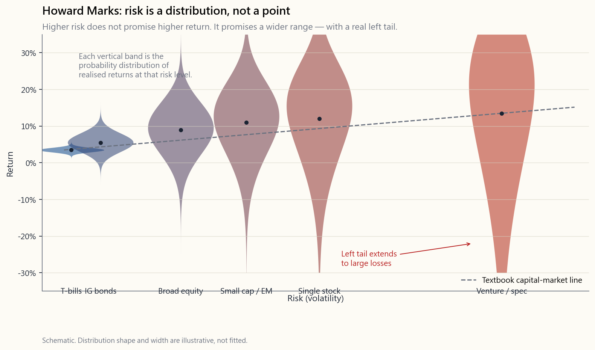

Week 3: Risk and Return — The Two Forces, Honestly Measured
1. Why This Is Important
Last week we landed on a simple prescription: index ETF, automatic monthly transfer, close the app. It works. It also obscures the machinery underneath, and the machinery is what stops you panic-selling the next time the market hands you a 40% drawdown and a dinner-party guest tells you "this time it's different."
Risk and return are the two forces that drive every investment outcome. Most beginners spend all their attention on return — *"how much can I make?" The professional question is the inverse: "how much can I lose, how often, and is that loss survivable?"* If your answer to the second question is "I don't know," you are not investing. You are gambling with extra steps.
This lesson is the foundation for everything that follows. We will look at what risk actually is (and the three things people confuse with it), how to measure it without lying to ourselves, why higher expected return requires higher risk, why the same risk number behaves entirely differently over different horizons, and how the distinction between risk capacity and risk tolerance is the one that gets retirees blown up.
The honest disclaimer up front: **standard textbook treatments of risk assume return distributions look like a bell curve, and they don't.** Markets have fat tails — extreme events happen far more often than the math says they should. We will spend the second half of this lesson on why "5σ event" is a phrase to laugh at, not to plan around.
2. What You Need to Know
2.1 Risk Is Uncertainty of Outcomes — Not Just "Bad"
In everyday English, risk means the chance something bad happens. In finance, risk has a more precise meaning: **risk is the uncertainty of the outcome**. A risky asset is not necessarily one that will lose you money. It is one whose future return you cannot predict.
A three-month US Treasury bill yielding 4.3% is considered nearly risk-free not because the yield is high — it isn't — but because the range of plausible outcomes one quarter from now is essentially "4.3%, plus or minus a fraction of a percent." A single biotech stock is risky because the range one year from now might run from "−90% because the trial failed" to "+400% because the trial succeeded." The T-bill has low uncertainty. The biotech has enormous uncertainty in both directions.
Three things people confuse with risk that aren't:
commonly used — but volatility ≠ risk. A position can be quiet for five years and then blow up in a month (think Long-Term Capital Management, 1998). A position can be loud every day and be structurally bounded (think a deeply hedged options book). Realised price wiggles and risk are not the same thing.
a 50% probability of loss. A coin flip with payouts of −$1 / +$100 has the same 50% probability of loss but is wildly different in risk-adjusted terms. The probability of loss alone tells you nothing about the size of the loss when it comes.
a quantification of anything. Crashes are a feature of equity markets — they happen roughly once per decade, sometimes twice — and an investor who treats every crash as an emergency is going to spend their life selling the bottom.
"Risk comes from not knowing what you're doing." — Warren Buffett
2.2 Standard Deviation — The Workhorse Measure
The most common measure of risk is the standard deviation of returns, often called volatility or "vol." It tells you how widely an asset's actual returns have varied around its mean.
For an asset with average annual return $\mu$ and standard deviation $\sigma$, if returns were normally distributed (a big if; see §2.6):
- About 68% of years would fall in $\mu \pm \sigma$.
- About 95% of years would fall in $\mu \pm 2\sigma$.
- About 99.7% of years would fall in $\mu \pm 3\sigma$.
![Histogram of S&P 500 annual total returns, 1928 through 2024 (Damodaran annual dataset). The empirical mean is roughly 11.5% and the standard deviation is roughly 19.5%. A normal distribution with the same mean and standard deviation is overlaid as a smooth curve. The histogram has visibly fatter tails than the normal curve in <em>both</em> directions — the worst years (1931, 1937, 2008) shown in red on the left tail, and the best years (1933, 1954, 1958) shown in green on the right tail, are far further from the centre than a normal distribution predicts.](image/week03_return_distribution.png)
Three things to read off this chart:
- The centre is roughly 11% per year. That is the long-run nominal
- The standard deviation is roughly 20%. Sixty-eight percent of
- The distribution is wider than a normal curve in both tails.
The headline rule of thumb for asset-class volatility:
| Asset class | Historical annual σ |
|---|---|
| US Treasury bills | ~1% |
| Investment-grade bonds | ~6% |
| US large-cap stocks | ~16–20% |
| US small-cap stocks | ~22–28% |
| Emerging market stocks | ~24–30% |
| Single individual stock | ~30%+ |
| Bitcoin | ~70%+ |
Read the table from the bottom up. Bitcoin is roughly four times as volatile as the S&P 500 — meaning whatever drawdown a bell-curve model says is "extreme" for the index, you should expect roughly four times that for BTC. That is a lot more risk than the headline-friendly "BTC is up 200% this year" suggests.
2.3 Equity Risk Premium — The Compensation for Bearing Risk
The risk premium is the extra return you earn above the risk-free rate for accepting uncertainty. The most-cited number in all of finance is the equity risk premium (ERP): how much more, on average, US stocks return above US Treasury bills.
The inverse framing matters as much as the headline. The textbook calls the T-bill yield the risk-free rate of return. A more honest label — once you measure in purchasing power instead of nominal dollars — is the "return-free risk-free rate": a T-bill guarantees the nominal dollars come back, but it also nearly guarantees you lose ground to inflation, especially in a financial- repression regime where short rates are deliberately held below inflation. Bonds aren't "winning a small amount"; they are certainly losing purchasing power. The ERP is just as well understood as **the discount the volatile asset must offer to clear against an instrument whose downside is the certainty of slow decay.**
The headline numbers also need a regime split, because "long run post-1928" averages four very different monetary regimes into one reassuring number:
| Regime | Window | S&P 500 nominal CAGR | T-bill nominal CAGR |
|---|---|---|---|
| Gold-anchored Bretton Woods | 1928–1971 | ~9.5% | ~2.0% |
| Fiat / disinflation | 1971–2008 | ~11.0% | ~5.7% |
| ZIRP + QE / financial repression | 2009–2024 | ~14.5% | ~0.9% |
| Full sample | 1928–2024 | ~10.5% | ~3.4% |
Read that table carefully. The post-2008 regime — Fed funds pinned at zero from 2009 to 2015 and again 2020–2022, four rounds of quantitative easing, the Fed's balance sheet from $0.9T in 2008 to a peak of $9T in 2022 — produced an S&P CAGR roughly 35% higher than the long-run average, with T-bills returning essentially nothing. Most living retail investors and most index-fund managers built their entire mental model in this single regime. "Stocks return 7% real" is a statement averaged across regimes that have very little to do with each other; the recent regime massively over-paid equity holders while financially repressing the bond holder, and there is no guarantee the next regime resembles either the average or the recent past.
The full-sample arithmetic still impresses: the ~7-point nominal gap compounded over a century turns $1 of T-bills into ~$23 and $1 of stocks into ~$11,000 (real numbers are smaller; the ratio is essentially preserved). Just remember the ratio is built mostly out of three good regimes for stocks; the average should not be confused with the expected value going forward.
Why must the ERP exist? Two equilibrium arguments:
expected return, almost everyone prefers the less volatile one. For investors to willingly hold the volatile one, the price has to fall until the forward expected return is high enough to compensate. That gap is the risk premium.
offered the same expected return, no rational investor would hold stocks; everyone would sell into bonds, prices on stocks would fall, and forward returns would rise — until the gap re-opens. Risk premium is not a moral payment for "being brave"; it is the mechanical equilibrium price of clearing the volatile asset.
A caveat the textbook usually skips: stocks and T-bills are not the same kind of thing, and the model that prices them on a single risk axis hides as much as it reveals. A stock is a perpetual, residual claim on the productive assets and cash flows of a business — its value can grow indefinitely as the business grows. A T-bill is a contractual promise that returns a fixed number of dollars on a fixed date, with no claim on growth and no upside beyond the coupon. "Equally attractive expected returns" comparing these two is comparing apples to a coupon clipped from an apple crate. And the bond side is far less benign than the textbook presents:
- Bond prices are not stable. The 30-year Treasury lost roughly
- **Blue-chip equity is, on a 5-to-10-year window, often less
- A bond locked to maturity carries opportunity cost. Money sat
So treat the "equilibrium price of risk" framing as a useful first lens, not a complete one. The ERP is what the market prices the gap at; whether bonds are actually "safer than blue-chip stocks" for your purposes depends on which kind of risk you are trying to avoid (mark-to-market wiggle, default, purchasing-power loss, sequence-of-returns, opportunity cost) — and these don't all point the same way.
Two cautions, both important:
- The premium is an average over very long horizons. Stocks
- The premium can compress. When stocks have already run up a long
2.4 Systematic vs. Unsystematic Risk
This distinction is the single most important conceptual move in risk management. It determines which risks the market pays you to bear and which risks you are bearing for free.
- Unsystematic (idiosyncratic) risk. Specific to one company, one
- Systematic (market) risk. Affects the whole economy or whole
But the "cannot diversify" line is the canonical CFA answer, and it understates what's actually available. **You can diversify systematic equity risk by holding things that aren't equities.** Long-duration Treasuries rallied as stocks crashed in 2000–02 and 2008. Gold rallied through the 2008 GFC and the 2020 COVID crash. Long-volatility option structures explicitly pay off when equities fall fast. The right way to read "undiversifiable" is therefore undiversifiable inside the equity sleeve — at the multi-asset level, the systematic shock is itself an exposure you can hedge or shape. Week 4 (60/40), Week 6 (gold and commodities), Week 15 (multi-asset construction), Weeks 25–30 (options as exposure tools), and Week 47 (explicit tail-risk hedging) are each a different way of attacking the equity-systematic shock that this paragraph says you "cannot diversify away." The sentence is true only if you've already decided your portfolio is allowed to hold nothing but stocks.
The "free lunch" insight that won Markowitz the Nobel Prize: **since unsystematic risk can be eliminated for free through diversification, the market does not pay you to bear it.** A concentrated five-stock portfolio has much higher total volatility than the index, with the same expected return on the cross-section of all possible five-stock portfolios — but bear in mind unsystematic risk cuts both ways. Some five-stock portfolios in any given decade dramatically beat the index (if four of your five names happened to be Apple, Microsoft, Amazon, Nvidia in 2014); most under-perform substantially; and the average is the index. You aren't "guaranteed to lag" — you are taking on a lottery-ticket distribution around the same mean, where the market doesn't pay you for the spread.
Markowitz's framework is the foundation of **Modern Portfolio Theory (MPT) and the efficient frontier** — the locus of portfolios that maximise expected return for a given variance. Sitting on that frontier, the only risk being borne is systematic; everything below it is leaving free diversification on the table. The full MPT machinery — covariance matrices, mean-variance optimisation, efficient frontier, Capital Market Line — is the toolkit covered in Week 15 (multi-asset construction) and Week 23 (factor investing), with the well-known practical critiques (estimation error in the inputs, fragility to fat tails, breakdown of the covariance matrix in crises). Treat this paragraph as the seed; the formal treatment comes later.
How many names is "diversified"? The Evans & Archer (1968) and Statman (1987) studies — still the standard textbook citations — show the bulk of unsystematic risk reduction comes from the first 15–20 names; the curve of portfolio variance vs number of holdings is steep up to about 20 stocks and almost flat after about 30. Under modern conditions (with mega-cap concentration in the index crowding the names that matter into the top decile), reasonable researchers put the number a bit higher — call it 25–40 names, spread across uncorrelated industries — but the qualitative finding is unchanged: you do not need 500 names to capture ~95% of the diversification benefit, you need *enough names spread across enough industries that no single one moves the portfolio materially*. The S&P 500 buys you the last few percent of marginal diversification; everything north of ~30 well-chosen names is refinement, not breakthrough.
This is the argument for index funds rendered tightly: an index fund holds enough names — and enough sectors — that idiosyncratic risk is essentially zero, leaving you with only the systematic risk that the market actually pays you for. Concentrated stock-picking, unless you have a real edge, is voluntarily accepting a wider spread of outcomes around the same mean. Some pickers will win big. The expected value of being one of them is the same as just buying the index.
2.5 Drawdowns — The Risk That Actually Tests You
Standard deviation is a textbook measure. Maximum drawdown — the peak-to-trough decline of an equity curve — is the measure your nervous system is going to use, whether you like it or not.
Below is the actual S&P 500 drawdown chart from 1950 onward. The shaded peaks are the major bear markets. The number that matters in each case is not the size of the drawdown so much as the *time it took to recover* and the temperament that survival required.

Recovery times (peak-to-new-high), by event:
| Event | Drawdown | Months to bottom | Total round-trip recovery |
|---|---|---|---|
| 1973–74 (oil shock) | −48% | 21 | 7.5 years |
| 1987 Black Monday | −34% | 3 | 2 years |
| 2000–02 dot-com | −49% | 30 | 7 years |
| 2007–09 GFC | −55% | 17 | 5.5 years |
| 2020 COVID | −34% | 1 | 5 months |
| 2022 selloff | −25% | 10 | 2 years |
Two observations from this table that the standard-deviation number does not capture:
- The drawdowns are deeply asymmetric to the up-years. A single
- Recovery time matters as much as drawdown depth. The 2020 COVID
The behavioural lesson is simple. If your investment plan does not survive a 50% drawdown — meaning, you would sell — your plan is already broken. The plan must be built around the drawdown, not despite it.
2.6 Beta — The Slope, Not the Whole Picture
While standard deviation measures total risk, beta measures systematic risk only — the portion of risk that moves with the market.
A formal definition: beta is the slope of the regression of the asset's returns against the market's returns.
$$ \beta_i = \frac{\text{Cov}(r_i, r_M)}{\text{Var}(r_M)} $$
Read the slope, not the formula:
| Beta | What it means |
|---|---|
| 1.0 | Moves with the market — index funds, by construction |
| 1.5 | Moves 50% more than market — typical tech / cyclical stock |
| 0.5 | Moves 50% less — utilities, consumer staples |
| 0.0 | Uncorrelated to market — short-term Treasury bills |
| < 0 | Moves opposite to market — gold sometimes, long volatility |
The Capital Asset Pricing Model (CAPM) uses beta to compute an expected return:
$$ E[r_i] = r_f + \beta_i \cdot (E[r_M] - r_f) $$
In English: an asset's expected return equals the risk-free rate plus the asset's beta times the equity risk premium. CAPM is on every CFA exam and in every textbook. **It is also a description that does not work very well in practice.** Real-world cross-sections of expected return are explained better by other factors (size, value, profitability, momentum) than by beta alone — a finding that launched the entire factor-investing literature, which we cover in Week 23. Treat CAPM as the orthodox starting point that every finance professional understands; treat the factor models as the empirical refinements.
2.7 Time Horizon — Why "Risk" Means Something Different at 1y vs. 30y
One of the most-debated topics in finance is whether stocks become less risky over longer holding periods. The data has a nuanced answer.
Run the historical S&P 500 dataset and compute the worst and best annualised return over rolling holding periods of 1, 5, 10, 20, and 30 years. The picture is striking.

Two true things that look contradictory:
- The range of rolling returns narrows dramatically with horizon.
- *The cumulative* dollar consequence of a bad sequence still
The practical implication: **horizon expands what risk you can afford to bear.** A 25-year-old with a stable income and a 40-year investment horizon can run a much higher equity weight than a 65-year-old with a portfolio that has to fund the next 25 years of groceries. The 25-year-old has time to wait out a 50% drawdown; the 65-year-old does not.
A cautionary tale before you over-trust the rolling-return chart. The US dataset is a survivor. Two contemporary stock markets that did not behave like the S&P 500 are sitting in plain sight:
- Japan, 1989–2024. The Nikkei 225 peaked at 38,915 in December
- China A-shares, 2007–present. The Shanghai Composite peaked
The deeper lesson: **a stock market has to bear some honest relationship to the underlying real economy over the long run, and to the legal and political conditions under which minority shareholders actually get paid.** Studying historical price data in isolation — without asking why a market compounded for a century and whether those conditions still hold — is the central methodological error behind "buy and hold for 30 years" applied to any equity market on the planet. The US market's 100-year compounding rests on specific conditions (rule of law, dollar reserve status, productivity growth, demographic expansion, monetary regime). Some of those conditions are visibly weakening in 2026; the conditions that produced Japan's lost decades and China's locked range are not imaginary, just not American — yet.
That is the sequence-of-returns risk that the next paragraph captures. A retiree who experiences a 1973–74 in the first two years of retirement is permanently impaired — every dollar withdrawn during the drawdown removes shares that don't get to compound back. A retiree who experiences the same drawdown 15 years into retirement is barely affected. **Same drawdown. Same return distribution. Different sequence. Different outcome.**
2.8 Risk Capacity vs. Risk Tolerance — The Mismatch That Kills
One last distinction. It is the one most often missed, and it is the one that actually blows up retail portfolios.
Risk capacity — how much risk you can afford to bear, based on objective conditions:
- Time horizon
- Stability of income
- Net worth relative to lifestyle costs
- Insurance and other buffers
- Whether the portfolio funds your living expenses
- How you actually react when you see your account down 30%
- Whether you can sleep through a bear market
- Whether bad portfolio days affect your relationships, your sleep,
The mismatch quadrant is the dangerous one:
| High capacity | Low capacity | |
|---|---|---|
| High tolerance | Match. Take appropriate risk, sleep fine. | Danger zone. "I can handle volatility" + portfolio funds your rent = one bad year wipes you out. |
| Low tolerance | Education problem — you have the time horizon, but emotion drives you out at the bottom. | Match. Conservative positioning is the right answer. |
The two failure modes:
- High tolerance, low capacity. The 67-year-old retiree who
- Low tolerance, high capacity. The 28-year-old engineer with a
The single most useful question to ask yourself before sizing a position: **"If this position dropped 50% next month, would I be a forced seller?"** If the honest answer is yes, the position is too large. Cut it until the answer is no, regardless of what your "tolerance" tells you.
A fair pushback on the question, because the framing is too passive: if you actually knew a position was going to drop 50% next month, the correct response is not "size smaller and absorb it" — it is *hedge the downside, sell the position, or take the other side of the trade*. The question is a sizing tool, not a prediction tool. And the textbook reflex "you can't time the market" needs the adult version: **day-to-day, the market is approximately a random walk; decade-scale macro regime breaks are a slow-moving train wreck that you can see coming if you are paying attention.** A few recent examples retail investors had a real chance to read:
- 2008 Global Financial Crisis. Bear Stearns blew up in March
- 2020 COVID crash. The first COVID-19 cases in Wuhan were
- 2024 Trump–Iran war scare. US carrier strike groups began
None of these were unknowable in advance. None of them required insider information; the relevant data was on the front page of the Wall Street Journal. "You can't time the market" is correct for the day-to-day noise that dominates 95% of trading sessions; it is lazy when applied to visible, slow-moving regime events. The Week 47 (tail risk) and Level 5 framework rebuild this idea properly: pay attention to macro-level signal, hedge before the event rather than after, and accept that occasionally being early is the cost of doing this at all.
"The market can stay irrational longer than you can stay solvent." — John Maynard Keynes (attributed)
2.9 Howard Marks — Risk as the Probability of Permanent Loss, Not as Volatility
Everything above is the standard quantitative apparatus the profession uses: standard deviation, beta, drawdown distributions, the bell curve, the equity risk premium. Howard Marks — co- founder of Oaktree Capital, author of The Most Important Thing and Mastering the Market Cycle — has spent four decades arguing, correctly, that this entire toolbox confuses one observable proxy for the actual thing.
His core claim, in one sentence: **risk is the probability that something bad happens to your capital, not the wiggle of the price chart on the way there.** A position that swings ±30% intra-year but ends every decade higher is less risky than one that grinds quietly upward for nine years and goes to zero in the tenth — even though the standard-deviation calculation will rank them in the opposite order.
Three Marks ideas worth tattooing on the inside of your eyelids:
observed. The reason 2007 felt safe — to almost everyone — was that risk had been compounding inside the system for years without showing up in volatility. Mortgage spreads were tight, VIX was low, every model said the world was calm. The risk was maximal precisely because it was invisible. By the time it shows up in the volatility number, the trade is already lost. Conversely, the moments of maximum fear are usually moments of minimum risk: forced selling has crushed prices below intrinsic value, the marginal seller has already sold, and the forward expected return is at its highest. Marks formalised this with his risk-distribution diagram:
- The textbook capital-market line plots a single expected
- Marks's diagram replaces each point on that line with a
- The honest reading: **moving right on the risk axis does not
![Howard Marks's risk-distribution diagram. The horizontal axis is risk; the vertical axis is return. The textbook capital-market line is shown as a thin upward-sloping line. Overlaid at each level of risk is a vertical probability distribution — narrow and centred on the line at low risk, progressively wider and more left-skewed as risk rises. At T-bill risk the distribution is a tight spike. At broad-equity risk it is a wide bell with a visible left tail. At venture/speculative risk it is a very wide distribution where the left tail extends to total loss. The diagram makes the point that](image/week03_marks_risk_distribution.png)
not be wiped out.* Marks calls this survival first*. A 50% loss requires a 100% gain to recover. A 90% loss requires a 900% gain. A 100% loss requires a miracle. The asymmetry of loss recovery means that any strategy that can blow up — even with a 1% annual probability — will, on a long enough timeline, blow up. *"In order to win the game, you have to be there at the end."* Position sizing, leverage discipline, and tail-risk awareness are not topics added on top of a return-maximising strategy. They are the prerequisites without which return maximisation is gambling.
decision can have a bad outcome (rolled snake-eyes), and a bad decision can have a good outcome (the drunk who got home safely). Most retail investors evaluate themselves by P&L, which means they reward the bad decisions that happened to work and punish the good decisions that happened to lose. The professional question is *given the information at the time, was the position appropriately sized for its risk-adjusted expected return?* That question is answerable independent of the outcome. P&L is the noisy proxy; process is the signal.
The connection to everything above: **standard deviation, beta, and the bell curve are useful summaries of visible risk in ordinary market regimes.** They are systematically blind to the risk Marks is describing — latent, regime-conditional, asymmetric, and most dangerous when it is most invisible. The honest framework holds both views at once: use the quantitative tools to measure what you can, and use Marks's framing to remember that the number on the screen is not the thing itself, and that *the goal of the exercise is to still be in the game ten years from now.*
"Risk means more things can happen than will happen." — Elroy Dimson, quoted by Howard Marks "The riskiest things are the ones everyone thinks are safe." — Howard Marks "You can't predict. You can prepare." — Howard Marks
3. Common Misconceptions
Misconception 1: "Higher risk always means higher return."
Higher risk means higher expected return *for the asset class as a whole*, on long horizons. It does not mean higher return for any individual position. A single biotech stock is extremely risky and may return nothing if its trial fails. The risk premium applies to diversified bearers of systematic risk; concentrated positions in single names accept enormous idiosyncratic risk that the market does not pay you to bear. Risk and expected return scale together at the asset-class level, not at the single-position level.
More importantly, the goal of an active retail investor is not to take more risk for more return — it is to find **asymmetric trades**: payoffs where the upside is meaningfully larger than the downside, where you are positioned for a fat tail without having to fund it with a fat-tailed downside of your own. The barbell shape (Week 47, Level 5) is the cleanest expression: one end is high-conviction safety with little or no downside; the other end is asymmetric speculation with capped downside (long calls, long volatility, structured option positions) and uncapped upside. "Higher risk = higher return" is the passive paraphrase. The active paraphrase is *find the rare structures where the cap on downside lets the upside compound, and skip the symmetric trades that the textbook is describing.* This course teaches the textbook first because you cannot critique what you do not know — but the long-term goal of the course is the asymmetric trade, not the symmetric one.
Misconception 2: "If I just hold long enough, stocks always go up."
US stocks have always recovered eventually, but "eventually" can mean seven to fifteen years. Japanese stocks peaked in 1989 and did not surpass that level until 2024 — a 35-year wait. There is also a survivorship bias problem: we study the US market because it became the most successful equity market of the 20th century. China, Russia, Argentina, Egypt all had thriving exchanges in 1900 and delivered −100% real returns over the subsequent century. "Stocks for the long run" is true on the measured sample. The sample is US-conditional.
Misconception 3: "Standard deviation captures all the risk."
It captures Gaussian risk under the assumption that returns are normally distributed. They are not. Markets have fat tails — extreme moves happen far more often than the bell-curve model predicts. The 2008 crash was, by Gaussian arithmetic, a roughly 5σ event, which a normal distribution says should occur once every ~14,000 years. It happened. So did 1987 (a 22σ event under the prevailing models). The standard deviation of the body of the distribution does not predict the size or frequency of the tails. This is why we will spend Week 47 on tail-risk hedging instead of trusting the bell curve to size positions.
Misconception 4: "Bonds are safe."
Bonds are less volatile than stocks. They are not risk-free. Long bonds lost roughly 30% of their value in 2022 alone — that is a larger drawdown than the median equity bear market. Bond holders also face inflation risk (a 4% bond in a 6% real-inflation environment loses purchasing power even while paying a positive nominal yield) and credit risk (the issuer defaults). The 1982–2020 bond bull market trained an entire generation of investors and advisors to think of "bonds" and "safety" as synonyms. They are not, and the regime that made them feel synonymous has reversed.
Misconception 5: "Low realised volatility means low risk."
Sometimes. Sometimes not. Bernie Madoff's fund showed implausibly low volatility and steady returns from 1992 onward — *because the returns were fabricated*. Long-Term Capital Management's strategy ran with extremely low realised volatility for years before blowing up over a single quarter in 1998 and requiring a Federal Reserve- coordinated bailout. Realised volatility is one observation window; risk is the full distribution of possible outcomes, including the ones that haven't happened yet. Low vol can be a trap — the calm before the regime break.
Misconception 6: "Risk tolerance is a fixed personality trait."
It moves with experience, with portfolio size, and with life stage. A 25-year-old who has never seen a bear market often discovers, in their first one, that the tolerance they self-reported on their brokerage's questionnaire was theoretical. The same person ten years later, having watched two drawdowns recover, sleeps through a third without thinking about it. Tolerance is built, not declared.
**Misconception 7: "Diversification means owning lots of different funds."**
Diversification is about owning uncorrelated exposures. Owning ten US large-cap funds run by ten different managers gives you almost nothing — they all hold roughly the same names with the same betas and they all fall together. Owning a US equity fund, a long Treasury fund, gold, and a long-volatility hedge gives you real diversification because the assets respond differently to the same macro shocks. Number-of-funds is a vanity metric. Number-of-distinct- risk-factors is the real one.
4. Q&A
**Q1: If I can never get rid of systematic risk, why bother diversifying within equities?**
A: To eliminate the unsystematic risk you are not paid to bear. The textbook example — "a five-stock portfolio has the same expected return as the index but more total risk" — comes out of the Evans & Archer (1968) and Statman (1987) studies, where they computed the average portfolio variance across thousands of randomly drawn five-, ten-, twenty-stock portfolios. Average is the operative word. In reality, no individual five-stock portfolio has the same return as the index — most under-perform, a small minority massively over-perform, and only the cross-sectional mean equals the index. The statistical argument is correct on the expectation; the realised path of any single five-stock portfolio is a draw from a much wider distribution. The market doesn't pay you for sitting in that wide distribution. Hold ~25–40 well-spread names (or just buy the index) and you collect ~95% of the diversification benefit without the lottery-ticket variance.
**Q2: Bitcoin's volatility is 70%+. Does the same risk-premium logic apply?**
A: In principle yes — bitcoin's expected return must be high enough to clear at its volatility. In practice, bitcoin's expected return is not knowable from price history alone because the asset is too young and its monetary regime is still being negotiated. Standard risk-premium math uses 100 years of data to triangulate the equity premium — and that itself is a weaker exercise than it sounds. The equity from 100 years ago, 50 years ago, and today is materially not the same security: post-1971 the dollar left the gold standard and the entire monetary regime changed; post-2008 zero-rate policy and QE produced a structural bid for risk assets that did not exist in earlier decades; tax law, market microstructure (electronic trading, ETFs, 0DTE options), and the dominant marginal participant (passive flow vs active stock-picking) have all flipped within the sample. Aggregating across regime changes that fundamental gives you an average over different securities, not a stable estimate of the same one. For bitcoin you have 15 years, of which the first 8 were near-zero adoption and the last 7 are the entire price history. Apply the framework, but don't pretend the standard error on either estimate is small.
Q3: How do I estimate my own risk tolerance honestly?
A: Two steps, in order. First, take an honest capacity assessment: horizon, income stability, dependence of living expenses on the portfolio. Second, take a small allocation to a volatile asset and see how you actually feel during a drawdown. Self-reported risk tolerance from a brokerage questionnaire correlates poorly with behaviour in a real bear market. Tolerance is observed, not declared.
**Q4: Why is 60/40 the conventional portfolio if bonds aren't a reliable inflation hedge anymore?**
A: 60/40 was built around a specific 40-year window (1982–2020) in which (a) bonds yielded above inflation and (b) bonds rallied when stocks fell. Both broke in 2022, when stocks and bonds fell roughly 20% together. The conventional 60/40 is a legacy allocation matching a legacy regime. Modern equivalents replace some or all of the bond sleeve with cash, gold, and long-volatility hedges (Week 47, Level 5).
**Q5: What is the most useful single risk number for a retail investor?**
A: Maximum drawdown of the strategy you are running, sized to your portfolio. Multiply your portfolio value by 0.5 (a plausible once-per-decade equity drawdown), and ask whether the dollar amount that you would see in red on the screen would force you into bad decisions. If yes, you are over-allocated to risk. If no, you can proceed.
**Q6: Why does the textbook keep using the standard deviation if it's not great?**
A: Because it has nice mathematical properties (additive under linear combinations, easy to estimate from data, well-behaved in models), not because it captures the risk that matters. The standard deviation is a useful summary of the central body of the distribution. It is inadequate as a descriptor of the tails, which is exactly where the losses you remember actually live. The honest professional uses standard deviation plus drawdown plus tail-event analysis — never any one alone.
Q7: Is volatility a good or bad thing for an investor?
A: For a buyer who is dollar-cost averaging in over years, mild volatility is mildly good (you buy at a discount during dips). For a holder who is sitting on accumulated wealth, volatility is mostly the cost of doing business — not "bad" in expectation, but the emotional load you carry. For a seller in decumulation, volatility is genuinely costly because of sequence-of-returns risk. The same number means different things at different life stages.
And once options enter the toolkit, **volatility itself is an asset class** — not just a risk to be borne. Implied volatility on listed options trades and re-prices independently of the underlying; a long-volatility position can compound through equity drawdowns that decimate buy-and-hold portfolios. Weeks 25–30 introduce the option mechanics, Week 29 covers the Greeks (vega is the direct exposure to volatility), and Week 47 builds a long-volatility tail-hedge sleeve as a permanent allocation rather than a tactical trade — Week 47 introduces a Dragon-portfolio-inspired shape that makes long-volatility a permanent sleeve. "Vol is good or bad?" is the wrong question once you can buy and sell it directly; the right question is *what regime is vol in, and what side am I on*.
Q8: What does "fat tails" actually mean for sizing my positions?
A: Whatever drawdown a normal-distribution model says is "extreme" — size as if a drawdown twice that depth is genuinely possible. The 2008 GFC was a 5σ event under the prevailing risk models; planning to survive a 5σ event of the right magnitude (so, ~50% on US large cap rather than ~25% the model predicted) is what kept investors in the game. The shorthand: *plan for half-off, every decade, no warning.*
**Q9: How does a "barbell" shape relate to standard deviation?**
A: The barbell exploits the fat-tailed distribution. By holding high-conviction safety on one end (short-Treasuries, gold, cash) and asymmetric speculation with capped downside on the other (long calls, long-vol structures), the resulting portfolio has a higher arithmetic standard deviation than a passively-diversified core but a better drawdown profile and a better response to tail events. The standard deviation alone makes it look "riskier"; the drawdown distribution shows it actually isn't. This is a Week 14 / Level 5 topic but the framing matters for how you read this lesson.
Q10: How does this lesson connect to the rest of the course?
A: Risk and return are the foundation under everything that follows. Week 4 (60/40) and Week 11 (rebalancing as behavioural discipline) are exercises in shaping the risk profile of a multi-asset portfolio. Week 13 onwards (long/short, pair trading) are about removing systematic risk and isolating specific bets. Weeks 25–30 (options) are the toolkit for expressing risk asymmetrically. Week 47 (tail risk) is the explicit treatment of the fat-tail problem this lesson opened. Every subsequent strategy will be evaluated on its risk profile — not just its return.
The interactive demo on the website extends this lesson with a holding-period explorer: a slider lets you choose any rolling window from 1 to 30 years, and the chart shows the historical distribution of annualised real returns for that window — best, worst, median, and the odds of ending up below zero. The shape of the distribution at 1 year and 20 years is essentially the §2.7 chart, but you can slide between them and watch the tails close.
第三週：風險與回報——兩股力量，誠實衡量
1. 為何這一課至關重要
上週我們得出一個簡單處方：指數交易所買賣基金、自動每月轉賬、關掉應用程式。這方法有效。但它也遮蔽了底層機制，而正是這套機制，能在下次市場讓你面對40%回撤、晚宴賓客告訴你「這次不一樣」時，阻止你恐慌性拋售。
風險與回報是驅動每一個投資結果的兩股力量。大多數初學者把全部注意力放在回報上——「我能賺多少？」 專業人士的問題卻恰恰相反：「我最多能虧多少、多久發生一次，而那次虧損是否能承受？」 如果你對第二個問題的答案是「不知道」，那你並非在投資，而是在多走幾步的賭博。
這一課是後續一切的基礎。我們將探討風險究竟是什麼（以及人們常與之混淆的三件事）、如何在不自欺的情況下量化風險、為何較高的預期回報必然需要較高的風險、為何同一個風險數字在不同投資期限下的表現截然不同，以及為何風險承受能力與風險承受意願之間的區別，正是令退休人士一敗塗地的根源。
事先坦誠聲明：標準教科書對風險的處理，假設回報分佈呈鐘形曲線，但現實並非如此。 市場存在肥尾——極端事件發生的頻率遠高於數學模型所預測。本課後半部分將說明，為何「5個標準差事件」是一句值得一笑置之、而非作為規劃依據的話。
2. 你需要掌握的知識
2.1 風險是結果的不確定性——而非單指「壞事」
在日常英語中，風險是指某件壞事發生的可能性。在金融領域，風險有更精確的含義：風險是結果的不確定性。高風險資產不一定是會令你虧損的資產，而是其未來回報無法預測的資產。
三個月期美國國債收益率4.3%，被視為近乎無風險，並非因為收益率高——它並不高——而是因為一個季度後可能出現的結果範圍基本上只有「4.3%，上下幾個基點」。一隻生物科技單股則截然不同，一年後的結果範圍可能是「−90%（因臨床試驗失敗）」到「+400%（因臨床試驗成功）」。國債的不確定性極低，生物科技股則在兩個方向上均存在巨大的不確定性。
三件人們常與風險混淆、但實非風險本身的事：
「風險來自於不知道自己在做什麼。」 ——巴菲特
2.2 標準差——最常用的衡量工具
衡量風險最常見的指標，是回報的標準差，通常稱為波動性或「vol」。它告訴你，一項資產的實際回報偏離其均值的幅度。
對於平均年回報為$\mu$、標準差為$\sigma$的資產，假如回報服從正態分佈（一個很大的假設，詳見§2.6）：
- 約68%的年份回報落在$\mu \pm \sigma$之間。
- 約95%的年份回報落在$\mu \pm 2\sigma$之間。
- 約99.7%的年份回報落在$\mu \pm 3\sigma$之間。
從此圖可讀取三點：
- 中心值約為每年11%。 這是標普500長期名義總回報平均值。扣除通脹後的「實際」數字約為7%——而教科書上那個平滑的8%承諾，與聖誕老人的地位相當。
- 標準差約為20%。 68%的年份回報落在−9%至+30%之間。規劃應針對範圍，而非平均值。
- 分佈在兩側均比正態曲線寬。 1931年的−44%、2008年的−37%、1933年的+54%、1954年的+52%——在鐘形曲線模型下，這些均不應出現。但它們確實發生了。市場存在肥尾。
| 資產類別 | 歷史年化標準差 |
|---|---|
| 美國國庫券 | 約1% |
| 投資級債券 | 約6% |
| 美國大型股 | 約16–20% |
| 美國細價股 | 約22–28% |
| 新興市場股票 | 約24–30% |
| 單一個股 | 約30%以上 |
| 比特幣 | 約70%以上 |
從下往上讀這張表。比特幣的波動性約為標普500的四倍——意味著無論鐘形曲線模型對指數計算出的「極端」回撤是多少，比特幣的預計值大約是四倍。這比「比特幣今年上漲200%」這個吸引眼球的標題，蘊含著多得多的風險。
2.3 股票風險溢價——承擔風險的補償
風險溢價是你接受不確定性、相較無風險利率所獲得的額外回報。金融界引用最廣的數字，是股票風險溢價（ERP）：美國股票平均比美國國庫券多出多少回報。
反向理解與正向表述同樣重要。教科書將國庫券收益率稱為無風險回報率。但以購買力而非名義美元衡量，更誠實的稱呼是「無回報的無風險利率」：國庫券保證名義美元如數歸還，但也幾乎確保你在購買力上蒙受損失——尤其是在短期利率被刻意壓低至通脹以下的金融抑制環境中。債券並非「賺取少量收益」，而是確定性地侵蝕購買力。股票風險溢價同樣可理解為：波動資產必須提供的折讓，以便在一個下行面是緩慢侵蝕的確定性工具面前，仍能被市場接受。
這些標題數字也需要按時代拆分，因為「1928年以來的長期」均值，是將四個截然不同的貨幣政策時代混為一談後得出的令人安心數字：
| 時代 | 區間 | 標普500名義複合年增長率 | 國庫券名義複合年增長率 |
|---|---|---|---|
| 黃金錨定布雷頓森林體系 | 1928–1971 | 約9.5% | 約2.0% |
| 法幣/去通脹 | 1971–2008 | 約11.0% | 約5.7% |
| 零利率政策+量化寬鬆/金融抑制 | 2009–2024 | 約14.5% | 約0.9% |
| 全樣本 | 1928–2024 | 約10.5% | 約3.4% |
請仔細閱讀此表。2008年後的時代——聯邦基金利率從2009年至2015年及2020年至2022年再度釘至零、四輪量化寬鬆、美聯儲資產負債表從2008年的0.9萬億美元擴張至2022年峰值的9萬億美元——令標普500的複合年增長率比長期均值高出約35%，而國庫券幾乎毫無回報。大多數在世的散戶投資者和大多數指數基金管理人，整個思維框架均建立在這單一時代之上。「股票實際回報率7%」是一個跨時代平均的說法，而這些時代彼此關聯甚微；近期時代大幅優待股票持有人，同時對債券持有人實施金融抑制，而下一個時代是否會與均值或近期過去相似，並無保證。
全樣本的算術數字依然令人印象深刻：約7個百分點的名義差距，在一個世紀的複利作用下，令1美元國庫券增長至約23美元，而1美元股票增長至約11,000美元（實際數字較小，但比率基本保持不變）。只需記住，這個比率主要由股票表現良好的三個時代所貢獻；平均值不應被混淆為未來的預期值。
為何股票風險溢價必然存在？兩個均衡論點：
教科書通常略去的一個注意事項：股票與國庫券並非同一類事物，在單一風險軸上為兩者定價的模型，所隱藏的資訊與所揭示的一樣多。股票是對企業生產性資產及現金流的永久剩餘索取權——其價值可隨企業增長而無限增長。國庫券是一份在固定日期歸還固定金額美元的合約承諾，對增長毫無索取權，超出票息亦無上行空間。在「預期回報同樣具吸引力」的比較下，這是蘋果比橙的對比。債券的處境遠比教科書呈現的更不友善：
- 債券價格並不穩定。 30年期美國國債僅在2022年便下跌約−30%——跌幅深於中位數股票熊市——而TLT（長期國債交易所買賣基金）目前仍低於2020年的峰值。在未指明哪種債券、何種存續期、處於何種時代的情況下，將債券稱為「安全」，是一個分類錯誤。
- 藍籌股在5至10年的窗口內，往往比長存續期債券的資本波動性更低。 可口可樂、寶潔和強生，在過去20年產生的按市值計算的財富，比30年期美國國債更為穩定——且額外支付了持續增長的股息。
- 持有至到期的債券存在機會成本。 在2009年至2021年的股票大漲期間，被鎖定在4%的10年期美國國債中的資金，錯失了約14倍的增長。無風險利率在某一維度上無風險，在另一維度上卻積極承擔風險——即你用後悔來衡量的那個維度。
兩點重要警示：
- 溢價是超長期的平均值。 自1928年以來，股票在大約65–70%的日曆年份中跑贏國庫券——更準確的說法是，國庫券在少數年份勝出，幾乎全是經濟衰退或崩盤年份（1929–32年、1937年、1973–74年、2000–02年、2008年、2022年）。因此，股票風險溢價與其說是「堅持持股度過國庫券獲勝年份的補償」，不如說是承受那些集中而痛苦的年份的補償——在那些年份，平均值已失去意義。 2008年的−37%，與被告知在某十年間跑輸7%，是截然不同的體驗。
- 溢價可能收窄。 當股票已大幅上漲後，未來預期回報較低；當前股價隱含的溢價，可能遠低於歷史均值。席勒的周期調整市盈率（CAPE）是嘗試對此進行量化的常見工具。2026年，CAPE處於30多的高位，隱含的未來股票風險溢價更接近3–4%，而非7%。這並非對未來十年必然表現欠佳的預測——而是一個警示：歷史均值與當前預期值是不同的統計數字。
2.4 系統性風險與非系統性風險
這一區分是風險管理中最重要的概念性轉變。它決定了市場會為哪些風險付費、以及哪些風險是你在免費承擔。
- 非系統性風險（個別風險）。 特定於某一家公司、某一行業或某一倉位。例如：行政總裁醜聞、產品召回、單一工廠火災、針對某一企業的監管行動、礦難。分散投資可消除此類風險。 持有500隻股票而非5隻，任何一家的行政總裁醜聞，對你投資組合的影響只是幾分之一個百分點，而非20%。
- 系統性風險（市場風險）。 影響整個經濟或整個市場：經濟衰退、利率變動、通脹、戰爭、疫情。在股票範疇內，你無法通過分散投資消除此類風險。 即使是一個完全分散的股票投資組合，在1929年、1973–74年、2008年或2020年，也會損失35–55%。系統性股票風險正是市場通過股票風險溢價付費讓你承擔的風險。
馬科維茨獲得諾貝爾獎的「免費午餐」洞見：由於非系統性風險可通過分散投資免費消除，市場不會為承擔它付費。 一個集中於五隻股票的投資組合，相比指數有高得多的總體波動性，但在所有可能的五隻股票組合的截面上，預期回報相同——不過需注意，個別風險是雙向的。在任何給定的十年中，某些五隻股票的組合會大幅跑贏指數（如果你的五隻股票碰巧是2014年的蘋果、微軟、亞馬遜、英偉達）；大多數則大幅跑輸；而平均值就是指數。你並非「保證落後」——而是圍繞相同均值承擔彩票式的分佈，而市場不會為這個分散度付費。
馬科維茨的框架是現代投資組合理論（MPT）及有效前沿的基礎——即在給定方差下，使預期回報最大化的投資組合軌跡。處於該前沿上，所承擔的唯一風險是系統性風險；低於前沿的任何投資組合，都是在浪費免費的分散投資機會。完整的現代投資組合理論工具——協方差矩陣、均值方差優化、有效前沿、資本市場線——將在第十五週（多資產構建）及第二十三週（因子投資）中介紹，連同其公認的實際批評（輸入參數的估計誤差、對肥尾的脆弱性、危機中協方差矩陣的崩潰）。將本段視為種子，正式處理留待後續。
多少隻股票才算「分散」？埃文斯與阿切爾（1968年）及斯塔特曼（1987年）的研究——至今仍是教科書標準引用——顯示，非系統性風險的大部分削減，來自前15至20隻股票；投資組合方差與持股數量的曲線，在約20隻股票前陡峭，約30隻後幾乎持平。在現代條件下（指數中的巨型股集中效應，令重要股票集中於前十分位），合理的研究人員將這個數字稍微上調——約25至40隻股票，分佈於不相關的行業——但定性結論不變：你不需要500隻股票來獲取約95%的分散投資收益，你需要的是足夠多、分佈於足夠多行業的股票，使得任何單一股票不會對投資組合產生實質影響。標普500帶來的是最後幾個百分點的邊際分散投資收益；超過約30隻精選股票之後的一切，是精細調整，而非突破性改進。
這是指數基金論點的精煉版本：指數基金持有足夠多的股票——以及足夠多的板塊——使個別風險基本為零，只留下市場實際付費讓你承擔的系統性風險。集中選股，除非你有真正的優勢，是在自願接受圍繞相同均值的更大結果分佈。部分選股者會大獲全勝。但成為其中之一的預期值，與直接買入指數相同。
2.5 回撤——真正考驗你的風險
標準差是教科書指標。最大回撤——即股權曲線從峰值到谷底的跌幅——才是你的神經系統將實際使用的指標，無論你喜歡與否。
以下是1950年以來標普500的實際回撤圖。陰影峰值區域是主要熊市。在每個案例中，真正重要的數字，不是回撤的幅度，而是從谷底復原所需的時間，以及這種復原所要求的心理素質。
各事件的復原時間（從峰值到創新高）：
| 事件 | 回撤幅度 | 觸底月數 | 完整往返復原時間 |
|---|---|---|---|
| 1973–74年（石油危機） | −48% | 21 | 7.5年 |
| 1987年黑色星期一 | −34% | 3 | 2年 |
| 2000–02年科網泡沫 | −49% | 30 | 7年 |
| 2007–09年全球金融危機 | −55% | 17 | 5.5年 |
| 2020年新冠疫情 | −34% | 1 | 5個月 |
| 2022年拋售潮 | −25% | 10 | 2年 |
從此表中讀取兩點觀察，這是標準差數字無法捕捉的：
- 回撤相對於上升年份呈深度不對稱。 單次−48%的跌幅，需要+92%才能回到原點。一個對好年份和壞年份進行對稱平均的鐘形曲線模型，完全錯失了這一點。
- 復原時間與回撤深度同樣重要。 2020年新冠疫情崩盤的幅度與1987年崩盤相同——但1987年花了兩年時間復原，2020年只花了五個月。美聯儲的積極干預是其機械原因。一位在1973–74年提取資產的退休人士，必須在七年半內靠一個尚未復原的投資組合持續提取收入。這與同等幅度的回撤、卻在2020年僅五個月後便反彈，是截然不同的問題。
2.6 貝塔——斜率，而非全貌
標準差衡量總體風險，而貝塔只衡量系統性風險——即隨市場波動的風險部分。
正式定義：貝塔是資產回報對市場回報進行回歸的斜率。
$$ \beta_i = \frac{\text{Cov}(r_i, r_M)}{\text{Var}(r_M)} $$
讀懂斜率，而非公式：
| 貝塔 | 含義 |
|---|---|
| 1.0 | 與市場同步波動——指數基金，按其構造而言 |
| 1.5 | 波動幅度比市場高50%——典型科技股／週期性股票 |
| 0.5 | 波動幅度少50%——公用事業、消費必需品 |
| 0.0 | 與市場不相關——短期國債 |
| < 0 | 走勢與市場相反——黃金有時如此，長倉波動性亦然 |
資本資產定價模型（CAPM）利用貝塔計算預期回報：
$$ E[r_i] = r_f + \beta_i \cdot (E[r_M] - r_f) $$
簡言之：資產的預期回報等於無風險利率加上資產貝塔乘以股票風險溢價。CAPM出現在每一份CFA考試及每一本教科書之中。但它在實踐中其實效果不佳。 現實中預期回報的截面分佈，由其他因子（規模、價值、盈利能力、動量）解釋得更好，而非單靠貝塔——這一發現催生了整個因子投資文獻，我們將在第23週深入探討。請將CAPM視為每位金融專業人士都理解的正統起點，並將因子模型視為實證改進。
2.7 投資時間線——為何「風險」在1年與30年的含義截然不同
金融界最具爭議的話題之一，是股票在更長持有期內是否會變得風險更低。數據給出了一個微妙的答案。
對S&P 500歷史數據進行分析，計算滾動持有1年、5年、10年、20年及30年的最差與最佳年化回報，結果相當驚人。

兩件看似矛盾、實則皆真的事：
- 滾動回報的範圍隨時間線延長而顯著收窄。 在1年時，從−38%到+52%都在歷史記錄之內。在30年時，範圍收縮至約+3%至+10%年化。到了30年後，「股票一直賺錢」對過去而言是一個站得住腳的說法。
- 一旦遇上不利的回報序列，累計財富損失仍會複利放大。 一個年化回報「僅」+3%實際回報的30年期，最終財富會明顯少於年化+9%實際回報的情況。時間收窄的是年化回報率的差距，而非累計財富差距。
在你過度依賴滾動回報圖表之前，有一個警示。美國數據集存在倖存者偏差。兩個表現截然不同於S&P 500的當代股票市場，就擺在眼前：
- 日本，1989–2024年。 日經225指數於1989年12月見頂38,915點，直至2024年2月才重返該水平——以名義計，這是一段長達35年的原地踏步。一位在1989年高峰買入指數並持有、並將股息再投資的日本投資者，整個工作生涯中資本增值為零。經通脹調整後，這段旅程在2026年仍未走完。日本版「長線持股」教科書，與美國版大相徑庭。
- 中國A股，2007年至今。 上海綜合指數於2007年10月見頂6,124點，2026年5月前後約在3,300點水平徘徊——距高峰仍低46%，歷時近二十年，期間有兩次回升嘗試（2015年小型泡沫、2021年新冠疫情後反彈）均在一年內回吐。「同期經濟大幅增長」是事實，但與股東無關，因為大部分增長流向私人及國有業主，而非少數股東。（這正是地域集中風險所在——市場必須尊重少數股東，長期複利才能運作。）
這就是下一段所要討論的回報序列風險。一位在退休首兩年便遭遇1973–74年式暴跌的退休人士，將永久受損——每一筆提款都是在低位出售股份，這些股份再也無法複利回升。而一位在退休15年後才遭遇同樣暴跌的人，幾乎不受影響。同樣的回撤。同樣的回報分佈。不同的序列。不同的結果。
2.8 風險承擔能力與風險承受意願——致命的錯配
最後一個區分。這是最常被忽略的一個，也是真正令散戶投資組合爆倉的那一個。
風險承擔能力——基於客觀條件，你能夠承擔多少風險：
- 投資時間線
- 收入穩定性
- 相對於生活開支的資產淨值
- 保險及其他緩衝
- 投資組合是否需要支撐日常生活開支
- 當你看到賬戶下跌30%時的真實反應
- 你是否能在熊市中安然入睡
- 投資組合表現不佳是否影響你的人際關係、睡眠及工作
| 高承擔能力 | 低承擔能力 | |
|---|---|---|
| 高承受意願 | 匹配。 承擔適當風險，一覺睡到天光。 | 危險地帶。 「我能承受波動性」＋投資組合要支付租金＝一個差年頭便可令你傾家蕩產。 |
| 低承受意願 | 認知問題——你有足夠的時間線，但情緒卻讓你在低位出逃。 | 匹配。 保守部署是正確答案。 |
兩種失敗模式：
- 高承受意願，低承擔能力。 那位67歲的退休人士，親眼見證了2009至2024年的大牛市，並因此相信自己篤信股票。他現在100%持股，已在回撤中掙扎兩年，每年提取4%作生活費。30%的回撤迫使他在低位沽售股份以支付生活開支；這些股份對他而言永不復原。再多三個差年頭，投資組合便永久受損。這是散戶退休投資者最常見的爆倉方式——將承受意願誤當成承擔能力。
- 低承受意願，高承擔能力。 那位28歲的工程師，擁有20年投資期及可觀薪酬，卻因「不信任市場」而將積蓄存入高息儲蓄賬戶。她有能力承受50%的回撤——每兩週都有收入進賬，不受影響。她所缺乏的，是讓她能夠坦然度過回撤的經歷。解決方法不是「更勇敢」，而是循序漸進：小額配置，親歷回撤，見證復甦，再加碼，如此重複。假以時日，逐步建立承受意願。
對這個問題的一個合理反駁，因為框架過於被動：如果你真的知道某個倉位下個月會跌50%，正確的應對不是「縮小倉位並硬撐」——而是對沖下行風險、沽出倉位，或反手做空。這個問題是倉位管理工具，而非預測工具。而「你無法把握市場時機」這一教科書式反射動作，需要一個更成熟的版本：逐日而言，市場大致是隨機漫步；但十年尺度的宏觀制度性斷裂，是一列慢速行駛的火車，若你保持警覺，是可以看見它迎面駛來的。 以下幾個近期例子，散戶投資者確實有機會提前讀懂：
- 2008年全球金融危機。 貝爾斯登於2008年3月爆煲，雷曼兄弟於2008年9月倒閉。S&P 500熊市最慘烈的跌浪由2008年9月延伸至2009年3月——距礦坑裡的金絲雀已公開死在眾人眼前，整整六個月之後。
- 2020年新冠疫情崩市。 武漢首批新冠肺炎病例於2019年12月至2020年1月報告。意大利封城始於3月9日。S&P 500於2020年2月19日見頂——距一種新型呼吸道病毒在多個大洲造成大規模死亡，已過去將近兩個月。其後34%的崩跌，發生之前已有數週公開新聞報道，顯示全球經濟即將停擺。
- 2024年特朗普—伊朗戰爭威脅。 美國航母打擊群開始明顯重新部署至中東，比市場真正因區域戰爭前景而出現波動，早了數週。
「市場保持非理性的時間，可以比你保持償債能力的時間更長。」 ——約翰·梅納德·凱恩斯（引述）
2.9 霍華德·馬克斯——風險是永久虧損的概率，而非波動性
以上所述，是這個行業所使用的標準量化工具：標準差、貝塔、回撤分佈、鐘形曲線、股票風險溢價。霍華德·馬克斯——橡樹資本聯合創辦人、《投資最重要的事》及《掌握市場週期》作者——花了四十年時間有力地論證，這整套工具箱，不過是將一個可觀察的代理指標與真實事物混為一談。
他的核心論點，一句話概括：風險是你的資本遭受損失的概率，而非價格圖表在途中的波動幅度。 一個倉位在年內波動幅度達±30%，但每十年終結時均更高，其風險低於另一個九年間緩步上揚、第十年歸零的倉位——儘管標準差計算的排名恰恰相反。
馬克斯的三個值得銘記於心的觀點：
- 教科書的資本市場線，在每一風險水平上繪製單一預期回報：承擔更多風險，獲得更多回報。平滑、單調、令人安心。
- 馬克斯的圖表，將該線上的每一個點替換為一個概率分佈——隨著向右移動而愈寬。在低風險（國債）處，分佈是圍繞均值的一個窄峰。在股票類風險處，是一個寬廣的範圍，帶有真實的左尾。在創投及投機風險處，分佈極為龐大，左尾延伸至零。
- 誠實的解讀：在風險軸上向右移動，並不保證更高的回報。它保證的是更寬廣的回報分佈——包括遠差於安坐較低風險所能取得的結果。預期回報上升；但任何個別投資者的實際回報可能落在任何地方，而且隨著風險上升，不確定性愈來愈大。

與上述所有內容的關聯：標準差、貝塔及鐘形曲線，是對普通市場制度下可見風險的有用概括。 它們對馬克斯所描述的風險——潛伏的、制度性的、不對稱的，且在最不可見之時最為危險——存在系統性盲點。誠實的框架應同時持守兩種觀點：使用量化工具衡量可衡量之物，並以馬克斯的框架提醒自己，屏幕上的數字並非事物本身，而這場演練的目標，是十年後仍在場上。
「風險意味著能夠發生的事，比將要發生的事更多。」 ——艾洛伊·迪姆森，被霍華德·馬克斯引述 「最危險的事，往往是人人都以為安全的事。」 ——霍華德·馬克斯 「你無法預測。但你可以準備。」 ——霍華德·馬克斯
3. 常見誤解
誤解一：「風險越高，回報必然越高。」
風險越高，意味著資產類別整體在長時間線上的預期回報越高。這並不意味著任何單一倉位的回報更高。一隻生物科技股風險極高，若其臨床試驗失敗，可能一無所獲。風險溢價適用於承擔系統性風險的分散化投資者；集中於單一個股的倉位，承受的是龐大個別風險，而市場並不為此付出報酬。風險與預期回報在資產類別層面相互對應，而非在單一倉位層面。
更重要的是，主動散戶投資者的目標，並非承擔更多風險以換取更高回報——而是尋找不對稱交易：上行潛力遠大於下行風險的回報結構，讓你能夠在不需要承擔同等尾部下行風險的情況下，佈局於厚尾上行。槓鈴形結構（第47週，第五級）是最清晰的表達：一端是高確信度的安全持倉，幾乎沒有下行空間；另一端是下行有限（認購期權長倉、波動性長倉、結構性期權倉位）、上行無限的不對稱投機。「風險越高＝回報越高」是被動投資的說法。主動投資的說法是：尋找那些罕見的結構，讓下行上限使上行得以複利增長，並跳過教科書所描述的對稱交易。 本課程先教教科書，因為不了解就無從批判——但本課程的長遠目標，是不對稱交易，而非對稱交易。
誤解二：「只要持有夠長，股票必然上漲。」
美國股票最終總是復甦，但「最終」可能意味著七至十五年。日本股票於1989年見頂，直至2024年才重返該水平——等待了35年。此外還有一個倖存者偏差問題：我們研究美國市場，是因為它成為了20世紀最成功的股票市場。中國、俄羅斯、阿根廷、埃及在1900年均有蓬勃的交易所，但在隨後的一個世紀，實際回報均為−100%。「長線持股」在所研究的樣本上是成立的，但這個樣本存在美國條件的限制。
誤解三：「標準差涵蓋所有風險。」
它所涵蓋的是在回報服從正態分佈假設下的高斯風險。而回報並非正態分佈。市場存在厚尾——極端波動發生的頻率，遠高於鐘形曲線模型的預測。按高斯計算，2008年的崩潰約為5個標準差事件，即正態分佈所說的約每14,000年發生一次。它發生了。1987年的崩潰亦然（按當時的模型，為22個標準差事件）。分佈主體的標準差，無法預測尾部的規模或頻率。這正是我們將在第47週深入探討尾部風險對沖，而非依賴鐘形曲線確定倉位規模的原因。
誤解四：「債券是安全的。」
債券的波動性低於股票，但並非沒有風險。長債在2022年單年便虧損約30%——這比一般股票熊市的回撤幅度還要大。債券持有人亦面臨通脹風險（在實際通脹6%的環境下，票息4%的債券即使支付正名義收益率，購買力仍在縮減）及信用風險（發行人違約）。1982至2020年的債券牛市，令整整一代投資者及顧問習慣於將「債券」與「安全」畫上等號。兩者並非等號，而令它們感覺等同的那個制度，已然逆轉。
誤解五：「已實現波動性低，即代表風險低。」
有時如此，有時並非。伯尼·麥道夫的基金自1992年起呈現低得難以置信的波動性及穩定回報——因為回報是捏造的。長期資本管理公司的策略以極低的已實現波動性運行多年，卻在1998年單一季度內爆倉，並需要美聯儲協調救市。已實現波動性是一個觀察窗口；風險是所有可能結果的完整分佈，包括尚未發生的那些。低波動可能是陷阱——制度性斷裂前的表面平靜。
誤解六：「風險承受意願是固定的性格特質。」
它會隨經歷、投資組合規模及人生階段而改變。一個從未經歷熊市的25歲年輕人，往往在第一次遭遇熊市時，發現自己在券商問卷上所填報的承受意願，不過是紙上談兵。同一個人十年後，親歷兩次回撤並見證復甦，第三次再來時可以毫不動搖。承受意願是建立出來的，而非宣告得來的。
誤解七：「分散投資就是持有許多不同的基金。」
分散投資的關鍵在於持有不相關的風險敞口。持有十隻由十位不同基金經理管理的美國大型股基金，幾乎毫無意義——它們持有的基本上是相同的股票，擁有相同的貝塔，且會同步下跌。持有一隻美國股票基金、一隻長期國債基金、黃金及一隻波動性長倉對沖工具，才是真正的分散投資，因為這些資產對相同的宏觀衝擊的反應截然不同。基金數量是虛榮指標；不同風險因子的數量才是真正的衡量標準。
4. 問答
問題一：如果系統性風險永遠無法消除，為何還要在股票內部分散投資？
答：為了消除你不應承擔的個別風險。 教科書中的經典例子——「五隻股票的投資組合與指數的預期回報相同，但總風險更高」——源於 Evans & Archer（1968）及 Statman（1987）的研究。他們對數以千計隨機抽取的五隻、十隻、二十隻股票投資組合，計算出平均投資組合方差。平均二字至關重要。現實中，沒有任何一個五隻股票的投資組合回報與指數完全相同——大多數表現遜色，少數大幅跑贏，只有橫截面均值才等於指數。統計論點在期望值層面是正確的；任何單一五股投資組合的實際走勢，都是從一個更寬廣的分佈中抽取的結果。市場不會為你身處這個寬廣分佈而付出溢價。持有約 25 至 40 隻分散得宜的股票（或直接買入指數），即可獲得約 95% 的分散投資效益，同時避免彩票式的高波動性。
問題二：比特幣的波動性高達 70% 以上，同樣的風險溢價邏輯是否適用？
答：理論上適用——比特幣的預期回報必須足夠高，以抵消其波動性。但實際上，比特幣的預期回報無法單憑價格歷史得知，因為這項資產歷史太短，其貨幣機制仍在演變之中。標準的風險溢價計算需要 100 年的數據來推算股票溢價——而這本身已是相當薄弱的推算。100 年前、50 年前和今日的股票，實質上並非同一種證券：1971 年後美元脫離金本位，整個貨幣制度改變；2008 年後零利率政策及量化寬鬆為風險資產製造了結構性需求，此前數十年並不存在；稅務法規、市場微觀結構（電子交易、交易所買賣基金、零日到期期權）以及主導的邊際參與者（被動資金流與主動選股），在樣本期內都已翻天覆地。將如此根本的制度轉變加總起來計算，得出的是不同證券的平均值，而非同一證券的穩定估計。比特幣只有 15 年歷史，其中頭 8 年幾乎是零採用率，後 7 年才是完整的價格歷史。可以套用這個框架，但不要假裝任何一方的標準誤差很小。
問題三：如何誠實地評估自己的風險承受能力？
答：按順序分兩步進行。第一步，誠實評估自己的承受能力：投資期限、收入穩定性、生活開支對投資組合的依賴程度。第二步，將少量資金投入波動性資產，觀察自己在回撤期間的真實感受。透過券商問卷自我申報的風險承受能力，與真實熊市中的實際行為相關性很低。風險承受能力是觀察得來的，而非口頭宣稱的。
問題四：既然債券不再是可靠的通脹對沖工具，為何 60/40 仍是傳統投資組合？
答：60/40 建立於一個特定的 40 年窗口（1982–2020），在此期間（a）債券收益率高於通脹，（b）股票下跌時債券上漲。兩者均在 2022 年同步失效——股票和債券同時下跌約 20%。傳統 60/40 是舊制度下的遺留配置方式。現代替代方案以現金、黃金及長波動性對沖工具取代部分或全部債券倉位（第 47 週，第五級）。
問題五：對零售投資者而言，最有用的單一風險數字是什麼？
答：最大回撤——即你所採用策略的最大回撤，按你的投資組合規模計算。將你的投資組合價值乘以 0.5（每十年一次的合理股票回撤幅度），然後問自己：若螢幕上出現這個虧損金額，是否會迫使你做出錯誤決策？若答案是「會」，你的風險配置過重。若答案是「不會」，你可以繼續。
問題六：教科書為何繼續使用標準差，即使它並不理想？
答：因為它具有良好的數學特性（在線性組合下可加、容易從數據中估算、在模型中表現穩定），而非因為它能捕捉真正重要的風險。標準差是描述分佈中心部分的有用概括工具，但作為尾部的描述工具則嚴重不足——而你記憶中的損失恰恰就發生在尾部。誠實的專業人士會同時使用標準差、回撤及尾部事件分析，而非單獨依賴任何一項。
問題七：波動性對投資者來說是好事還是壞事？
答：對於長期分批買入、採用平均成本法的投資者而言，溫和的波動性略有益處（在下跌時能以折扣價買入）。對於持有已積累財富的投資者而言，波動性大體上是投資的代價——在期望值上並非「壞事」，但卻是你需要承受的心理負擔。對於處於提取階段的退休者而言，波動性確實代價高昂，因為存在回報次序風險。同一個數字在人生不同階段有著截然不同的意義。
一旦期權進入工具箱，波動性本身就成為一種資產類別——而不僅僅是需要承擔的風險。上市期權的引伸波幅可獨立於相關資產進行交易和重新定價；長波動性倉位能夠在買入持有投資組合遭受重創的股票回撤中持續增值。第 25 至 30 週介紹期權機制，第 29 週涵蓋希臘字母（vega 是直接反映波動性敞口的指標），第 47 週將長波動性尾部對沖倉位構建為永久配置而非戰術性交易——第 47 週引入一種受龍型投資組合啟發的結構，將長波動性作為永久性倉位。「波動性是好是壞？」一旦你能直接買賣它，這個問題本身就問錯了；正確的問題是：波動性目前處於哪種市況，而我站在哪一邊。
問題八：「肥尾」對倉位規模意味著什麼？
答：不論正態分佈模型認為什麼樣的回撤屬於「極端」——都應按兩倍深度的回撤來進行規劃。2008 年全球金融危機在當時主流風險模型下是一個 5σ 事件；而能夠承受正確量級的 5σ 事件（即美國大型股約 50% 的跌幅，而非模型預測的約 25%），才是令投資者留在場內的關鍵。簡而言之：每十年一次、毫無預警地腰斬，請提前做好準備。
問題九：「啞鈴」形結構與標準差有何關係？
答：啞鈴策略利用肥尾分佈的特性。一端持有高確信度的安全資產（短期國債、黃金、現金），另一端持有下行空間有限的不對稱投機工具（認購期權、長波動性結構），所形成的投資組合在算術標準差上高於被動分散的核心組合，但在回撤表現和尾部事件應對上都更佳。單看標準差，它顯得「風險更高」；但回撤分佈顯示實際上並非如此。這是第 14 週及第五級的主題，但理解這一框架對閱讀本課至關重要。
問題十：本課與課程其餘部分有何聯繫？
答：風險與回報是後續一切內容的基礎。第 4 週（60/40）和第 11 週（作為行為紀律的再平衡）是塑造多資產投資組合風險特徵的練習。第 13 週起（長短倉、配對交易）是關於消除系統性風險、鎖定特定投注。第 25 至 30 週（期權）是以不對稱方式表達風險的工具箱。第 47 週（尾部風險）是本課所開啟的肥尾問題的專項論述。後續每一項策略都將從其風險特徵而非單純回報來評估。
網站上的互動示範延伸了本課內容，提供一個持有期探索器：滑桿讓你選擇 1 至 30 年的任意滾動窗口，圖表展示該窗口內年化實際回報的歷史分佈——最高、最低、中位數，以及最終低於零的概率。1 年與 20 年的分佈形態基本上就是第 2.7 節的圖表，但你可以在之間滑動，觀察尾部如何收窄。
第三週：風險與報酬——兩股力量，誠實衡量
1. 為什麼這很重要
上週我們得出了一個簡單的處方：指數股票型基金、每月自動轉帳、關掉 App。這個方法有效。但它也遮蔽了底層的運作機制，而正是這套機制，能讓你在市場下一次給你一個 40% 回撤、餐桌旁的朋友告訴你「這次不一樣」的時候，不至於恐慌性賣出。
風險與報酬是驅動每一項投資結果的兩股力量。多數初學者把所有注意力放在報酬上——「我能賺多少？」 專業投資人問的問題恰好相反：「我最多能虧多少、發生頻率如何，這種虧損是否能承受？」 如果你對第二個問題的答案是「我不知道」，你並不是在投資，而是在多繞幾個彎的賭博。
本課是後續所有內容的基礎。我們將探討風險究竟是什麼（以及人們常與它混淆的三件事）、如何在不自欺欺人的情況下衡量它、為何較高的預期報酬必然要求較高的風險、為何相同的風險數字在不同時間區間的表現截然不同，以及風險承受能力與風險承受意願之間的區別，為何正是這個區別讓退休人士血本無歸。
先說誠實的免責聲明：標準教科書對風險的處理假設報酬分佈呈鐘形曲線，但實際上並非如此。 市場具有肥尾現象——極端事件發生的頻率遠高於數學預測。本課後半段將深入探討為何「5σ 事件」是一個值得嘲笑、而非用來規劃的說法。
2. 你需要知道的事
2.1 風險是結果的不確定性——不只是「壞事」
在日常語言中，風險意指某件壞事發生的機率。在金融領域，風險有更精確的意涵：風險是結果的不確定性。一項高風險資產不一定會讓你虧錢，而是一項你無法預測未來報酬的資產。
三個月期的美國國庫券殖利率為 4.3%，被認為幾乎沒有風險，不是因為殖利率高——它並不高——而是因為一季後所有合理結果的範圍，本質上是「4.3%，上下差幾個基點」。一支單一的生技股則有高風險，因為一年後的結果範圍可能從「−90%（臨床試驗失敗）」到「+400%（臨床試驗成功）」。國庫券的不確定性低；生技股的不確定性在兩個方向上都極高。
常與風險混淆、但其實不是風險的三件事：
「風險來自於不知道自己在做什麼。」 ——沃倫·巴菲特
2.2 標準差——最常用的風險衡量指標
最常見的風險衡量指標是報酬的標準差，通常稱為波動性或「vol」。它告訴你一項資產的實際報酬偏離其平均值的幅度有多大。
對於平均年報酬為 $\mu$、標準差為 $\sigma$ 的資產，假設報酬呈常態分佈（一個很大的假設；見 §2.6）：
- 約有 68% 的年份落在 $\mu \pm \sigma$。
- 約有 95% 的年份落在 $\mu \pm 2\sigma$。
- 約有 99.7% 的年份落在 $\mu \pm 3\sigma$。
從這張圖可以讀出三件事：
- 中心大約在每年 11%。 這是 S&P 500 長期名目總報酬平均值。扣除通膨後的「實質」數字接近 7%——而教科書平滑的 8% 承諾，和聖誕老人的地位差不多。
- 標準差約為 20%。 68% 的年份落在 −9% 到 +30% 之間。要為的是範圍做計畫，而不是平均值。
- 分佈在兩個尾部都比常態曲線更寬。 1931 年的 −44%、2008 年的 −37%、1933 年的 +54%、1954 年的 +52%。這些在鐘形曲線模型下都不應該發生。但它們確實發生了。市場具有肥尾現象。
| 資產類別 | 歷史年度 σ |
|---|---|
| 美國國庫券 | ~1% |
| 投資等級債券 | ~6% |
| 美國大型股 | ~16–20% |
| 美國小型股 | ~22–28% |
| 新興市場股票 | ~24–30% |
| 單一個股 | ~30%+ |
| 比特幣 | ~70%+ |
從表格底部往上看。比特幣的波動性大約是 S&P 500 的四倍——也就是說，不論鐘形曲線模型說指數的什麼情況算「極端」，你應該預期比特幣會有大約四倍的回撤。這比「比特幣今年漲了 200%」這個吸引人的頭條所暗示的風險高出許多。
2.3 股票風險溢酬——承擔風險的補償
風險溢酬是你因接受不確定性而在無風險利率之上賺取的額外報酬。金融界引用最多的數字是股票風險溢酬（ERP）：美國股票的平均報酬比美國國庫券高出多少。
反向的思考框架與頭條數字同樣重要。教科書將國庫券殖利率稱為無風險報酬率。一個更誠實的說法——一旦你改用購買力而非名目美元來衡量——是「無報酬的無風險利率」：國庫券保證名目上的美元會回來，但幾乎也保證你在通膨面前節節敗退，尤其是在短期利率被刻意壓低至通膨之下的金融抑制時代。債券不是「小賺一點」；而是確定地侵蝕購買力。股票風險溢酬同樣可以理解為：波動性資產必須提供的折扣，才能與一種下行風險是確定性緩慢消耗的工具相比而有人願意持有。
頭條數字也需要區分不同時代，因為「1928 年以來的長期」平均，把四個截然不同的貨幣政策時代混在一起，得出一個令人安心的單一數字：
| 時代 | 區間 | S&P 500 名目年化複合成長率 | 國庫券名目年化複合成長率 |
|---|---|---|---|
| 金本位布雷頓森林體系 | 1928–1971 | ~9.5% | ~2.0% |
| 法幣 / 通膨趨緩 | 1971–2008 | ~11.0% | ~5.7% |
| 零利率政策 + 量化寬鬆 / 金融抑制 | 2009–2024 | ~14.5% | ~0.9% |
| 完整樣本 | 1928–2024 | ~10.5% | ~3.4% |
仔細閱讀這張表格。2008 年後的時代——聯準會利率從 2009 年到 2015 年釘在零，2020 至 2022 年再度如此，四輪量化寬鬆，聯準會資產負債表從 2008 年的 0.9 兆美元擴張至 2022 年高峰的 9 兆美元——使 S&P 500 的年化複合成長率比長期平均高出約 35%，同期國庫券幾乎沒有任何報酬。多數現役散戶投資人和多數指數基金經理人，其整個心智模型都是在這單一時代中建立的。「股票實質報酬 7%」是一個跨越彼此幾乎毫無關聯的不同時代的平均數；近期時代極度優待股票持有人，同時在金融上壓制債券持有人，而下一個時代是否會與平均值或近期過去相似，並無保證。
完整樣本的算術平均值依然令人印象深刻：約 7 個百分點的名目差距，複利一個世紀後，1 美元的國庫券變成約 23 美元，1 美元的股票變成約 11,000 美元（實質數字較小；比率基本上保持不變）。只要記住，這個比率主要是由股票表現良好的三個時代所貢獻；這個平均值不應與未來的預期值混為一談。
為何股票風險溢酬必然存在？兩個均衡理論的論點：
教科書通常略過的一個注意事項：股票和國庫券並非同類事物，而將兩者放在單一風險軸上定價的模型，所遮蔽的與所揭示的一樣多。股票是對企業生產性資產和現金流的永久性剩餘求償權——隨著企業成長，其價值可以無限增長。國庫券是一份契約承諾，在固定日期返還固定金額的美元，對成長沒有任何求償權，報酬上限就是票面利率。比較這兩者的「同等吸引力預期報酬」，就像拿蘋果與從蘋果箱剪下的優惠券相比。而債券的風險遠比教科書呈現的更不溫和：
- 債券價格並不穩定。 30 年期國庫券在 2022 年單年就下跌約 −30%——比一般股市空頭市場的中位數跌幅還深——而 TLT（長期國庫券指數股票型基金）至今仍低於其 2020 年的高峰。說債券「安全」，卻不指明哪種債券、什麼存續期間、在什麼時代，是一種類別錯誤。
- 藍籌股在 5 到 10 年的視角下，往往比長存續期間債券的資本波動性更小。 可口可樂、寶僑和嬌生在過去 20 年所產生的逐市計值財富，比 30 年期國庫券更加穩定——而且還支付了不斷成長的股利。
- 持有至到期日的債券帶有機會成本。 在 2009 至 2021 年股市狂飆期間，把錢鎖在殖利率 4% 的 10 年期國庫券裡，錯過了約 14 倍的漲幅。無風險利率在一個維度上是無風險的，但在另一個維度上——你用後悔來衡量的那個維度——是積極承擔風險的。
兩個重要的注意事項：
- 溢酬是超長期的平均值。 1928 年以來，股票在約 65–70% 的年份中打敗國庫券——更準確的說法是：國庫券贏的是少數年份，而這些年份幾乎都是經濟衰退或崩盤（1929–32、1937、1973–74、2000–02、2008、2022）。因此，股票風險溢酬與其說是「在國庫券占優的年份堅持持有股票的補償」，不如說是承受那些集中且痛苦年份的補償——在那些年份，平均值已失去意義。2008 年的 −37% 是一種截然不同的體驗，與被告知你在十年間跑輸了 7% 完全不同。
- 溢酬可能收窄。 當股票已大幅上漲，未來預期報酬就較低；當前股價所隱含的溢酬，可能遠小於歷史平均值。羅伯特·席勒的景氣調整本益比（CAPE）是量化這一點的常見嘗試。在 2026 年，CAPE 高達 30 多倍，隱含的未來股票風險溢酬更接近 3–4%，而非 7%。這不是預測未來十年將會表現不佳——而是一個警告：歷史平均值與當前預期值是不同的統計數字。
2.4 系統性風險與非系統性風險
這個區別是風險管理中最重要的單一概念轉變。它決定了哪些風險是市場付錢讓你承擔的，哪些是你免費承擔的。
- 非系統性（特有）風險。 特定於某家公司、某個產業或某個部位。例如：執行長醜聞、產品召回、單一工廠火災、針對單一企業的監管行動、礦難。分散投資可以消除這種風險。 持有 500 檔股票而非 5 檔，其中任何一家公司的執行長醜聞，對你投資組合的影響也不過幾個基點，而非 20%。
- 系統性（市場）風險。 影響整體經濟或整體市場：經濟衰退、利率變動、通膨、戰爭、疫情。你無法透過分散投資在股票內部消除這種風險。 即使是完美分散的股票投資組合，在 1929 年、1973–74 年、2008 年或 2020 年，也會下跌 35–55%。系統性股票風險是市場付費讓你承擔的，對應的報酬就是股票風險溢酬。
馬可維茲（Markowitz）贏得諾貝爾獎的「免費午餐」洞見：由於非系統性風險可以透過分散投資免費消除，市場並不付你承擔它。 集中持有五支股票的投資組合，總波動性遠高於指數，而在所有可能的五股組合截面上，預期報酬相同——但請記住，非系統性風險是雙向的。在任何給定的十年中，某些五股組合會大幅跑贏指數（如果你的五支股票恰好是 2014 年的蘋果、微軟、亞馬遜、輝達中的四支）；多數則會大幅跑輸；而平均值就是指數。你並非「保證落後」——你是在相同平均值周圍承擔彩券式的分佈，而市場並不為這個分散程度付你報酬。
馬可維茲的框架是現代投資組合理論（MPT）和效率前緣的基礎——效率前緣是在給定變異數下使預期報酬最大化的投資組合軌跡。站在效率前緣上，所承擔的唯一風險是系統性風險；低於效率前緣的任何位置，都是把免費的分散投資白白放棄。完整的現代投資組合理論工具——共變異數矩陣、均值變異數最佳化、效率前緣、資本市場線——是第 15 週（多資產建構）和第 23 週（因子投資）所涵蓋的工具，其中附帶眾所周知的實務批評（輸入值的估計誤差、對肥尾的脆弱性、危機中共變異數矩陣的崩潰）。將本段視為種子；正式的處理留待後續。
幾支股票算「分散」？Evans & Archer（1968）和 Statman（1987）的研究——至今仍是標準教科書引用——顯示非系統性風險降低的大部分效益來自前 15–20 檔股票；投資組合變異數對持股數量的曲線，在約 20 支股票前急劇下降，在約 30 支後幾乎趨於平緩。在現代條件下（指數中大型股高度集中，重要的股票擠進前十分位），合理的研究人員給出的數字略高——大約 25–40 檔，分散在不相關的產業之間——但定性結論不變：你不需要 500 檔股票才能獲得約 95% 的分散投資效益，你需要的是足夠多的股票分散在足夠多的產業，使任何單一股票都不會對投資組合產生重大影響。S&P 500 讓你獲得最後幾個百分點的邊際分散效益；在約 30 檔精心挑選的股票之上的一切，都是精益求精，而非突破性的改變。
這是為指數基金提出的精闢論點：指數基金持有足夠多的股票——以及足夠多的板塊——使得特有風險幾乎為零，只剩下市場實際付錢讓你承擔的系統性風險。集中選股，除非你有真正的優勢，就是在相同平均值周圍自願接受更寬的結果分佈。一些選股者將大勝。成為其中之一的預期值，與直接買指數相同。
2.5 回撤——真正考驗你的風險
標準差是教科書上的衡量指標。最大回撤——資產淨值曲線從高峰到低谷的跌幅——是你的神經系統實際會使用的衡量指標，不管你喜不喜歡。
下方是 1950 年以來 S&P 500 的實際回撤圖。陰影部分是主要的空頭市場。每個時期最重要的數字，不是回撤幅度本身，而是恢復所花的時間，以及撐過去所需要的心理素質。
恢復時間（從高峰到創新高），按事件：
| 事件 | 回撤幅度 | 觸底所需月數 | 完整來回恢復時間 |
|---|---|---|---|
| 1973–74（石油危機） | −48% | 21 | 7.5 年 |
| 1987 年黑色星期一 | −34% | 3 | 2 年 |
| 2000–02 年網路泡沫 | −49% | 30 | 7 年 |
| 2007–09 年全球金融危機 | −55% | 17 | 5.5 年 |
| 2020 年新冠崩盤 | −34% | 1 | 5 個月 |
| 2022 年跌勢 | −25% | 10 | 2 年 |
從這張表格中可以觀察到兩點，而這兩點是標準差這個數字無法捕捉的：
- 回撤相對於上漲年份呈現深度不對稱。 單次 −48% 的跌幅需要 +92% 才能回到原點。一個對好年份和壞年份對稱取平均的鐘形曲線模型，完全忽略了這一點。
- 恢復時間與回撤深度同等重要。 2020 年新冠崩盤的幅度與 1987 年崩盤相同——但 1987 年花了兩年才恢復；2020 年只花了五個月。聯準會的積極干預是機械性的原因。一位在 1973–74 年提領階段的退休人士，必須在投資組合沒有恢復的情況下，活過七年半，同時還要從中提取收入。這與在 2020 年遭遇相同幅度的跌幅、五個月後反彈，是截然不同的問題。
2.6 貝塔 — 斜率，而非全貌
標準差衡量的是總體風險，而貝塔衡量的則僅是系統性風險——即隨市場波動的那部分風險。
正式定義：貝塔是資產報酬對市場報酬進行回歸分析所得的斜率。
$$ \beta_i = \frac{\text{Cov}(r_i, r_M)}{\text{Var}(r_M)} $$
讀懂斜率，而非公式：
| 貝塔 | 含義 |
|---|---|
| 1.0 | 隨市場同步波動——指數基金天生如此 |
| 1.5 | 波幅比市場大 50%——典型科技股／景氣循環股 |
| 0.5 | 波幅比市場小 50%——公用事業、民生消費類股 |
| 0.0 | 與市場無相關性——短期國庫券 |
| < 0 | 走勢與市場相反——黃金有時如此、做多波動性部位 |
資本資產定價模型（CAPM）以貝塔計算預期報酬：
$$ E[r_i] = r_f + \beta_i \cdot (E[r_M] - r_f) $$
白話解釋：資產的預期報酬等於無風險利率，加上該資產的貝塔乘以股權風險溢酬。CAPM 出現在每一份 CFA 考題和每一本教科書中。但它也是一個在實務上效果不彰的描述框架。現實世界中，預期報酬的橫截面分析，用其他因子（規模、價值、獲利能力、動能）來解釋，比單純用貝塔更為準確——這項發現催生了整個因子投資文獻，我們將在第 23 週深入探討。請將 CAPM 視為每位金融專業人士都必懂的正統起點，而將因子模型視為實證上的精進修正。
2.7 投資期限——為何「風險」在 1 年與 30 年的意義截然不同
金融領域爭論最熱烈的議題之一，就是持有期限拉長後，股票是否會變得較不危險。數據給出的是一個有細微差別的答案。
取美國 S&P 500 歷史資料集，計算在 1、5、10、20、30 年滾動持有期限下，年化報酬率的最差與最佳表現。結果相當驚人。

兩件看似矛盾、卻同樣為真的事：
- 滾動報酬的區間隨持有期限大幅收窄。
- 糟糕序列所造成的累計財富損失，仍會以複利方式擴大。
實務意涵：投資期限決定了你能承擔多少風險。 一位 25 歲、收入穩定、擁有 40 年投資期限的年輕人，可以配置遠高於一位 65 歲、投資組合必須支應未來 25 年日常開銷的退休人士的股票比重。25 歲的人有時間等待 50% 的回撤結束；65 歲的人則沒有。
在你過度信賴滾動報酬圖表之前，有個警世故事值得一聽。美國的歷史資料集是一個存活者偏差的樣本。現實中有兩個走勢與 S&P 500 截然不同的主要股市，就擺在眼前：
- 日本，1989–2024 年。 日經 225 指數於 1989 年 12 月攀上 38,915 點的高峰，直到 2024 年 2 月才重新超越該水準——以名目計算，整整繞了35 年一圈。一位在 1989 年高點買進並持續投入股利再投資的日本投資人，在整個職涯中幾乎毫無資本增值可言。若以通膨調整後的實質報酬計算，截至 2026 年這段旅程仍未圓滿。日本版「長期持有股票」的教科書，和美國版的長相大相逕庭。
- 中國 A 股，2007 年至今。 上海綜合指數於 2007 年 10 月達到 6,124 點的高峰，2026 年 5 月仍在 3,300 點附近交易——距高峰已過去近二十年，仍低 46%，其間雖有兩次未竟的反彈（2015 年小泡沫、2021 年疫情後反彈），都在一年內回吐漲幅。「同期經濟大幅成長」確實為真，但對股東而言無關宏旨，因為多數成長果實流向私人業主與國有業主，而非少數股東。（這正是地理集中的重要性所在——唯有市場能切實保護少數股東，長期複利才得以實現。）
這就是下一段將要說明的報酬序列風險。一位在退休後頭兩年就遭遇 1973–74 年式崩跌的退休人士，會受到永久性傷害——每一筆在回撤期間提取的資金，都賣出了無法再參與後續複利的股份。而一位在退休後第 15 年才遭遇相同崩跌的人，幾乎毫髮無傷。同樣的回撤。相同的報酬分布。不同的序列。截然不同的結果。
2.8 風險承擔能力與風險承受度——那個要命的錯位
最後一個區分。這是最常被忽略的一個，也是實際上讓散戶投資組合崩潰的那一個。
風險承擔能力——基於客觀條件，你能夠承受多少風險：
- 投資期限
- 收入穩定性
- 相對於生活開銷的淨資產
- 保險及其他緩衝
- 投資組合是否用以支應生活費用
- 當你看到帳戶下跌 30% 時，你的實際反應
- 你能否在空頭市場中安然入睡
- 投資組合表現不佳時，是否影響你的人際關係、睡眠與工作
| 高承擔能力 | 低承擔能力 | |
|---|---|---|
| 高承受度 | 匹配。 承擔適當風險，一覺到天亮。 | 危險地帶。「我能承受波動性」＋投資組合是你的房租來源＝一個壞年份就讓你一無所有。 |
| 低承受度 | 認知問題——你有足夠的時間期限，但情緒在低點將你趕出市場。 | 匹配。 保守配置才是正確答案。 |
兩種失敗模式：
- 高承受度、低承擔能力。 一位 67 歲的退休人士，眼看 2009–2024 年的多頭市場一路攀升，於是認定自己相信股票。如今他持股比例高達 100%，在回撤中已撐了兩年，每年提領 4% 的生活費。30% 的回撤迫使他在低點賣股支付生活開銷；這些股份對他而言永遠無法回本。再遭遇三年的逆境，投資組合就將永久受損。這是退休散戶最常見的爆倉方式——把自己的承受度當成承擔能力。
- 低承受度、高承擔能力。 一位 28 歲的工程師，擁有 20 年投資期限與穩定薪資，卻因為「我不信任市場」而將積蓄全放在高收益儲蓄帳戶。她有能力承受 50% 的回撤——無論市場怎麼走，每隔兩週薪水照常入帳。她欠缺的是親身經歷過回撤之後的那份淡定。解方不是「要更勇敢」，而是循序漸進地建立曝險：小額配置，看著回撤發生，看著它復原，然後加碼，不斷重複。隨著時間積累，培養出真正的承受度。
對這個問題，有一個合理的反駁，因為這種框架過於被動：如果你真的知道某個部位下個月會跌 50%，正確的應對方式不是「把部位縮小然後吸收損失」——而是避險、賣出部位，或反向操作。這個問題是一個部位大小工具，不是預測工具。而教科書上的「你無法擇時進出市場」這個制式反應，需要一個成熟版本：短線而言，市場近似隨機漫步；但十年尺度的總體環境結構性轉變，是一列緩緩駛來、你若有在看就能看見的列車。 散戶投資人確實有機會解讀的幾個近期案例：
- 2008 年全球金融危機。 貝爾斯登於 2008 年 3 月爆雷，雷曼兄弟於 2008 年 9 月倒閉。S&P 500 空頭市場最慘烈的跌幅，是從 2008 年 9 月延續到 2009 年 3 月——礦坑裡的金絲雀死在眾目睽睽之下整整六個月後才發生。
- 2020 年 COVID 崩盤。 武漢首批 COVID-19 病例於 2019 年 12 月／2020 年 1 月通報。義大利封城始於 3 月 9 日。S&P 500 於 2020 年 2 月 19 日觸頂——距這種新型呼吸道病毒在多大洲大規模奪命，已過去將近兩個月。隨後發生的 34% 崩跌，其前兆是長達數週關於全球經濟即將停擺的公開新聞。
- 2024 年川普—伊朗戰爭恐慌。 美國航母打擊群開始大規模調遣至中東的消息，在市場真正因區域戰爭風險而顫抖的數週前就已公開可見。
「市場維持非理性的時間，可以比你保持償付能力的時間更長。」 — 約翰·梅納德·凱因斯（引述）
2.9 霍華·馬克斯——風險是永久性損失的機率，而非波動性
以上所述都是業界使用的標準量化框架：標準差、貝塔、回撤分布、鐘形曲線、股權風險溢酬。霍華·馬克斯——橡樹資本聯合創辦人、《投資最重要的事》與《掌握市場週期》的作者——花了四十年的時間，有理有據地論證，這整套工具箱將一個可觀察的代理指標與真正的風險本身混為一談。
他的核心主張，濃縮成一句話：風險是你的資本遭受惡果的機率，而非價格圖表在過程中的起伏震盪。 一個年內波動 ±30%、但每十年終究收高的部位，比一個九年緩步向上、第十年歸零的部位風險更低——即便標準差計算會得出相反的排名。
三個值得烙印在眼皮內側的馬克斯觀點：
- 教科書的資本市場線在每個風險水準上畫出單一預期報酬：承擔更多風險，獲得更高報酬。曲線平滑、單調遞增，令人安心。
- 馬克斯的圖表將該線上的每個點，替換為一個機率分布——越往右側越寬。在低風險（國庫券）水準，分布是集中在均值附近的窄峰。在股票類資產的風險水準，則是有著真實左尾的寬幅分布。在創投與投機性風險水準，分布極為寬廣，左尾延伸至歸零。
- 誠實的解讀：在風險軸上往右移動，並不保證更高的報酬。它保證的是更寬廣的報酬分布——包括遠比選擇更安全資產時更糟的結果。預期報酬上升；任何個別投資人的實現報酬卻可能落在任何位置，且隨風險升高愈發難以預料。
與以上所有內容的連結：標準差、貝塔與鐘形曲線，是衡量普通市場環境中可見風險的有用摘要工具。 但它們對馬克斯所描述的那種風險，系統性地視而不見——那種風險是潛伏的、條件依存的、不對稱的，而且在最危險的時候，往往是最看不見的。誠實的框架應同時持有這兩種觀點：用量化工具衡量你能衡量的，同時用馬克斯的框架提醒自己，螢幕上的數字並非風險本身，而且這整件事的目標，是確保十年後你仍然在場。
「風險意味著可能發生的事，比實際會發生的事更多。」 — 艾洛伊·迪姆森，霍華·馬克斯引述 「最危險的，往往是大家以為最安全的東西。」 — 霍華·馬克斯 「你無法預測。但你可以準備。」 — 霍華·馬克斯
3. 常見迷思
迷思一：「承擔更高風險，就一定有更高報酬。」
更高風險意味著整體資產類別在長期投資期限下的預期報酬更高。這並不意味著任何單一部位都能獲得更高報酬。單一生技股風險極高，若其臨床試驗失敗，報酬可能為零。風險溢酬適用於分散承擔系統性風險的投資人；集中在單一個股的部位，承擔的是龐大的非系統性風險，而市場不會為此支付額外報酬。風險與預期報酬的對應關係，適用於資產類別層面，而非單一部位層面。
更重要的是，主動散戶投資人的目標，並非為了更高報酬而承擔更高風險——而是找到不對稱交易：上行空間遠大於下行風險的報酬結構，讓你在不必承擔同等巨大下行尾部風險的情況下，就能佈局在上行的肥尾。槓鈴策略（第 47 週，第五級）是最清晰的體現：一端是高確信度的安全配置，幾乎無下行風險；另一端是下行有限（買權、做多波動性、結構型選擇權部位）、上行無限的不對稱投機。「較高風險＝較高報酬」是被動投資的說法。主動投資的說法是找到那些罕見的結構——下行封頂讓上行能夠複利增長，並跳過教科書描述的那種對稱性交易。 本課程先教教科書，是因為你無法批判你從未了解的東西——但課程的長期目標是不對稱交易，而非對稱交易。
迷思二：「只要持有夠久，股票一定會漲。」
美國股票最終確實總是回升，但「最終」可能意味著七到十五年。日本股票於 1989 年觸頂，直到 2024 年才重回那個水準——等了整整 35 年。此外還有一個存活者偏差的問題：我們研究美國市場，是因為它成為了 20 世紀最成功的股票市場。中國、俄羅斯、阿根廷、埃及在 1900 年都有蓬勃的交易所，卻在此後的一個世紀交出了 -100% 的實質報酬。「長期持有股票必然獲利」在已測量的樣本上成立，而這個樣本是以美國為條件的。
迷思三：「標準差涵蓋了所有風險。」
它所涵蓋的是在報酬呈常態分布假設下的高斯風險。但報酬並不是常態分布的。市場存在肥尾——極端波動發生的頻率，遠超過鐘形曲線模型的預測。2008 年的崩盤，以高斯統計計算，大約是一個 5σ 事件，而常態分布說這種事件每約 14,000 年才會發生一次。它卻發生了。1987 年也發生了（依當時盛行的模型，是一個 22σ 事件）。分布主體的標準差，無法預測尾部的規模或頻率。這就是為何我們將在第 47 週深入探討尾部風險避險，而非信賴鐘形曲線來決定部位大小。
迷思四：「債券很安全。」
債券的波動性低於股票，但並非無風險。長天期債券光是在 2022 年就跌去約 30%——這比中位數股票空頭市場的回撤還要大。債券持有人同樣面臨通膨風險（在實質通膨 6% 的環境下，4% 票面利率的債券即便名目上有正向殖利率，購買力仍在縮水），以及信用風險（發行人違約）。1982–2020 年的債券多頭市場，訓練了整整一代投資人與顧問，將「債券」與「安全」視為同義詞。事實並非如此，而讓這兩者看起來等同的那個時代背景，已然逆轉。
迷思五：「低實現波動性意味著低風險。」
有時是，有時不是。伯尼·馬多夫的基金從 1992 年起便展現出低得不可思議的波動性和穩定報酬——因為那些報酬是捏造的。長期資本管理公司的策略在多年間保持著極低的實現波動性，卻在 1998 年單季爆倉，需要聯準會協調紓困。已實現波動性只是一個觀察窗口；風險是所有可能結果的完整分布，包括那些尚未發生的。低波動性可能是一個陷阱——是環境轉折前的平靜。
迷思六：「風險承受度是固定的性格特質。」
它會隨著經歷、資產規模與人生階段而改變。一個從未經歷過空頭市場的 25 歲投資人，往往在第一次親歷時才發現，他在券商問卷上自評的承受度，不過是紙上談兵。同一個人十年後，親眼目睹兩次回撤都收復失地，面對第三次時，早就睡得著覺，不當一回事了。承受度是培養出來的，不是宣告出來的。
迷思七：「分散投資就是持有很多不同的基金。」
分散投資的本質是持有不相關的曝險。持有十個由十位不同經理人操盤的美國大型股基金，幾乎毫無意義——它們持有的都是大致相同的個股、相同的貝塔，且會一起下跌。同時持有美國股票基金、長天期國庫券基金、黃金和做多波動性的避險基金，才能帶來真正的分散投資，因為這些資產對相同的總體衝擊會有不同的反應。基金數量是個虛榮指標，真正重要的是不同風險因子的數量。
4. 問答
Q1：如果我永遠無法消除系統性風險，為什麼還要在股票內部做分散投資？
A：為了消除非系統性風險——那是你不應該白白承擔的風險。 教科書上的例子——「五檔股票的投資組合與指數的預期報酬相同，但總風險更高」——來自 Evans & Archer（1968）和 Statman（1987）的研究，他們在數千個隨機抽取的五檔、十檔、二十檔股票組合中，計算了平均投資組合變異數。平均是關鍵字。現實中，沒有任何一個五檔股票的投資組合會有與指數相同的報酬——大多數表現遜色，少數大幅超越，只有橫截面均值等於指數。統計論點在期望值上是正確的；任何單一五檔股票組合的實際走勢，都是從一個更寬廣的分布中抽取的一個結果。市場不會因為你待在那個寬廣的分布裡而給你報酬。持有約25至40檔分散良好的標的（或直接買指數），就能獲得約95%的分散投資效益，而不必承受彩券式的波動性。
Q2：比特幣的波動性超過70%。同樣的風險溢酬邏輯適用嗎？
A：原則上是的——比特幣的預期報酬必須夠高，才能在其波動性下獲得市場認可。實際上，比特幣的預期報酬無法單從價格歷史推算，因為這個資產太年輕，其貨幣制度仍在協商之中。標準的風險溢酬計算使用100年的資料來推估股權溢酬——而這本身也是比聽起來更薄弱的工作。100年前、50年前與今日的股票，實質上並非同一種有價證券：1971年後美元脫離金本位，整個貨幣制度隨之改變；2008年後的零利率政策與量化寬鬆，對風險資產產生了過去幾十年所沒有的結構性買盤；稅法、市場微觀結構（電子交易、指數股票型基金、0DTE選擇權），以及主要的邊際參與者（被動資金流 vs 主動式選股），在樣本期間內全都已翻天覆地。將如此根本性的制度更迭加以平均，得到的是不同有價證券的平均值，而非同一資產的穩定估計。對於比特幣，你有15年的資料，其中前8年幾乎零採用率，後7年才是完整的價格歷史。套用這個框架，但不要假裝兩者估計值的標準誤差都很小。
Q3：我要如何誠實地評估自己的風險承受度？
A：兩個步驟，依序進行。第一，做誠實的承擔能力評估：投資期限、收入穩定性、生活費用對投資組合的依賴程度。第二，將一小部分資金配置到波動性較高的資產，實際觀察自己在回撤期間的感受。券商問卷上自我申報的風險承受度，與真實空頭市場中的行為相關性很低。承受度是觀察出來的，不是宣稱出來的。
Q4：如果債券不再是可靠的通膨避險工具，為什麼60/40仍是傳統的投資組合？
A：60/40是建立在一個特定的40年窗口（1982–2020）上的，在那段期間，（a）債券殖利率高於通膨，以及（b）股票下跌時債券會反彈。這兩個條件在2022年都失效了——當年股票和債券各自下跌約20%。傳統的60/40是一種過時的資產配置，對應的是一個過時的制度。現代的替代方案，是以現金、黃金和長波動性避險部位取代部分或全部的債券配置（第47週，第5級）。
Q5：對散戶投資人來說，最有用的單一風險數字是什麼？
A：最大回撤——你正在執行的策略，以你的投資組合規模計算。將你的投資組合價值乘以0.5（每十年一次、合理估計的股票回撤），然後問自己：當你看到螢幕上那個紅字金額時，是否會被迫做出錯誤決策？如果是，你的風險配置過高。如果否，則可以繼續。
Q6：為什麼教科書一直使用標準差，即使它並不太好用？
A：因為它具有良好的數學性質（在線性組合下具有可加性、容易從資料估計、在模型中表現良好），而不是因為它能捕捉真正重要的風險。標準差是分布中央主體的有用摘要統計量。但作為尾部的描述工具，它是不足夠的——而那正是你記憶深刻的損失實際發生的地方。誠實的專業人士會同時使用標準差加上回撤加上尾部事件分析——絕不會只用任何一個。
Q7：波動性對投資人來說是好事還是壞事？
A：對於多年來持續定期定額投資的買方而言，溫和的波動性略有好處（你在下跌時以折價買入）。對於持有已累積財富的持有者而言，波動性大多是做這件事的代價——在期望值上並不「壞」，但卻是你必須承受的心理負擔。對於在提領期間的賣方而言，波動性的代價確實存在，因為有報酬順序風險。同一個數字，在不同人生階段代表著不同的意義。
而一旦選擇權進入工具箱，波動性本身就是一種資產類別——而不只是一種需要承受的風險。掛牌選擇權上的隱含波動率可以獨立於標的資產進行交易和重新定價；在空頭市場導致買進持有投資組合大幅虧損時，做多波動性的部位反而能持續複利成長。第25至30週介紹選擇權機制，第29週涵蓋希臘字母（vega是直接暴露於波動性的指標），第47週則將做多波動性的尾部避險部位建構為永久配置，而非戰術性操作——第47週引入了一種受龍型投資組合啟發的架構，將做多波動性設計為永久性配置。「波動性是好是壞？」一旦你能直接買賣它，這個問題本身就問錯了；正確的問題是：波動性目前處於哪種制度，而我站在哪一邊。
Q8：「肥尾」對我的部位規模到底意味著什麼？
A：無論常態分布模型說什麼樣的回撤是「極端」——都要以兩倍深度的回撤確實可能發生為前提來規模。2008年金融海嘯，在當時主流風險模型下是一個5個標準差的事件；計劃能夠承受正確量級的5個標準差事件（也就是美國大型股約50%，而非模型預測的約25%），才是讓投資人留在場上的關鍵。速記口訣：計劃每十年遭遇一次腰斬，毫無預警。
Q9：「啞鈴」形狀與標準差有何關係？
A：啞鈴策略利用了肥尾分布。透過一端持有高確信度的安全資產（短期國庫券、黃金、現金），另一端持有具有有限下行風險的不對稱投機部位（買權、做多波動性結構），所構成的投資組合，其算術標準差比被動分散的核心更高，但回撤特性更佳，對尾部事件的反應也更佳。單看標準差，它顯得「風險更高」；看回撤分布，實際上並非如此。這是第14週/第5級的主題，但這個框架對於你如何解讀本課至關重要。
Q10：這堂課與課程其他部分有何關聯？
A：風險與報酬是後續所有內容的基礎。第4週（60/40）和第11週（再平衡作為行為紀律）是塑造多資產投資組合風險輪廓的練習。第13週起（多空、配對交易）是關於消除系統性風險、鎖定特定賭注。第25至30週（選擇權）是不對稱地表達風險的工具箱。第47週（尾部風險）是對本課所開啟的肥尾問題的明確處理。後續每一個策略都將從其風險輪廓來評估——而不僅僅是報酬。
網站上的互動示範將本課延伸為一個持有期探索器：滑桿讓你選擇從1年到30年的任意滾動窗口，圖表顯示該窗口內年化實質報酬的歷史分布——最佳、最差、中位數，以及最終低於零的機率。1年和20年的分布形狀，本質上就是§2.7的圖表，但你可以在兩者之間滑動，觀察尾部如何收縮。
第三周：风险与收益——两大力量，诚实衡量
1. 为什么这很重要
上周我们得出了一个简单的处方：指数交易所交易基金、每月自动转账、关掉应用程序。这个方法有效。但它也遮蔽了底层的运作机制，而正是这套机制，才能让你在下次市场给你一个40%回撤、饭局上有人告诉你"这次不一样"的时候，不会慌乱抛售。
风险与收益是驱动一切投资结果的两大力量。大多数初学者把全部注意力放在收益上——"我能赚多少？" 专业人士的问题恰好相反："我最多能亏多少、发生频率有多高、这种亏损是否能够承受？" 如果你对第二个问题的回答是"我不知道"，那你不是在投资，而是在赌博，只是多走了几道弯路。
本课是后续所有内容的基础。我们将探讨风险究竟是什么（以及人们经常与之混淆的三件事）、如何在不欺骗自己的前提下衡量风险、为什么较高的预期收益必然要求承担更高的风险、为什么同样的风险数字在不同投资期限内的表现截然不同，以及为什么风险承受能力与风险偏好之间的区别，正是让退休人士遭受重创的根源。
坦诚的免责声明在前：标准教科书对风险的处理，假设收益分布看起来像一条钟形曲线，但事实并非如此。 市场存在厚尾效应——极端事件发生的频率远超数学模型的预测。本课的后半部分，我们将专门探讨为什么"5σ事件"这个说法只值得一笑，而不值得用来做规划。
2. 你需要了解的内容
2.1 风险是结果的不确定性——而非单纯的"坏事"
在日常英语中，风险意味着某件坏事发生的可能性。在金融领域，风险有更精确的含义：风险是结果的不确定性。一种有风险的资产，不一定会让你亏钱，而是其未来收益无法预测。
三个月期美国国债收益率4.3%，之所以被视为近乎无风险，不是因为收益率高——它并不高——而是因为一个季度后可能出现的结果范围，基本上就是"4.3%，加减一个百分点的零头"。一只单一的生物科技股票之所以有风险，是因为一年后的结果范围可能从"临床试验失败，下跌90%"到"临床试验成功，上涨400%"。国债的不确定性很低，而生物科技股在两个方向上都存在巨大的不确定性。
人们经常与风险混淆的三件事：
"风险来自于不知道自己在做什么。" ——沃伦·巴菲特
2.2 标准差——最常用的衡量工具
衡量风险最常见的指标是收益的标准差，通常称为波动性或"vol"。它告诉你，一项资产的实际收益偏离其均值的程度。
对于平均年收益率为$\mu$、标准差为$\sigma$的资产，如果收益呈正态分布（一个很大的假设；见§2.6）：
- 约68%的年份将落在$\mu \pm \sigma$区间内。
- 约95%的年份将落在$\mu \pm 2\sigma$区间内。
- 约99.7%的年份将落在$\mu \pm 3\sigma$区间内。
从这张图可以读出三点：
- 中心大约在每年11%。 这是标普500长期名义总收益的平均值。扣除通胀后的"实际"数字更接近7%——而教科书上平滑的8%承诺，与圣诞老人的存在具有同等地位。
- 标准差大约为20%。 68%的年份落在−9%到+30%之间。规划时要针对区间，而非均值。
- 分布在两侧尾部均比正态曲线更宽。 1931年的−44%、2008年的−37%、1933年的+54%、1954年的+52%——这些在钟形曲线模型下都不应该发生，但它们确实发生了。市场存在厚尾效应。
| 资产类别 | 历史年化标准差 |
|---|---|
| 美国国债 | ~1% |
| 投资级债券 | ~6% |
| 美国大盘股 | ~16–20% |
| 美国小盘股 | ~22–28% |
| 新兴市场股票 | ~24–30% |
| 单只个股 | ~30%以上 |
| 比特币 | ~70%以上 |
从下往上读这张表。比特币的波动性大约是标普500的四倍——这意味着，钟形曲线模型认为指数"极端"的回撤，对比特币而言预计会达到四倍。这远比"比特币今年上涨了200%"这种标题所暗示的风险要大得多。
2.3 股权风险溢价——承担风险的补偿
风险溢价是你在无风险利率之上，因接受不确定性而获得的额外收益。金融学中被引用最多的数字是股权风险溢价（ERP）：美国股票平均比美国国债多出多少收益。
反向视角与标题数字同样重要。教科书将国债收益率称为无风险收益率。但如果以购买力而非名义美元来衡量，一个更诚实的标签是"无收益的无风险利率"：国债保证名义美元会回来，但它也几乎保证你的购买力在通胀面前持续缩水——尤其是在金融压制环境下，短期利率被刻意压低至通胀水平以下。债券不是"小幅盈利"；而是确定性地损失购买力。股权风险溢价同样可以理解为：波动性资产必须提供的折扣，才能在一种下行风险是确定性缓慢贬值的工具面前获得清算。
标题数字还需要按货币制度分拆，因为"1928年以来的长期"平均了四个截然不同的货币制度，合并成了一个令人宽慰的数字：
| 货币制度 | 时间窗口 | 标普500名义复合年增长率 | 国债名义复合年增长率 |
|---|---|---|---|
| 布雷顿森林黄金本位 | 1928–1971 | ~9.5% | ~2.0% |
| 法定货币/去通胀化 | 1971–2008 | ~11.0% | ~5.7% |
| 零利率政策+量化宽松/金融压制 | 2009–2024 | ~14.5% | ~0.9% |
| 完整样本 | 1928–2024 | ~10.5% | ~3.4% |
仔细阅读这张表。2008年后的货币制度——美联储基准利率从2009年到2015年以及2020年到2022年锁定在零附近，四轮量化宽松，美联储资产负债表从2008年的0.9万亿美元膨胀至2022年峰值的9万亿美元——产生了比长期平均高约35%的标普500复合年增长率，而国债收益近乎为零。大多数在世的散户投资者和大多数指数基金管理人，都是在这单一货币制度下建立起完整的思维模型的。"股票实际收益7%"是一个跨越多个货币制度取平均的说法，这些制度之间其实没有什么共同之处；近期的货币制度大幅超额奖励了股票持有者，同时金融压制了债券持有者，且没有任何保证下一个货币制度会类似于平均值或近期的表现。
完整样本的算术结果依然令人印象深刻：约7个百分点的名义差距，复利累积一个世纪，会将1美元国债变成约23美元，将1美元股票变成约11,000美元（实际数字更小；比率基本保持不变）。只需记住，这个比率大部分是由三个对股票有利的货币制度构建而成的；历史平均值不应与未来预期值混淆。
为什么股权风险溢价必然存在？两个均衡论据：
有一点教科书通常略过：股票和国债并不是同类资产，将它们放在单一风险轴上定价的模型，遮蔽的信息与揭示的一样多。股票是对一家企业生产性资产和现金流的永续剩余索取权——随着企业成长，其价值可以无限增长。国债是一种合同承诺，在固定日期返还固定数量的美元，对增长没有任何索取权，收益不超过票息。将这两者的"预期收益同样具有吸引力"相比较，就像是在比较苹果与苹果箱上剪下的优惠券。债券一侧远不如教科书所呈现的那样温和：
- 债券价格并不稳定。 仅在2022年，30年期国债就下跌了约30%——跌幅超过股票熊市的中位数——而TLT（长期国债交易所交易基金）至今仍低于其2020年峰值。在没有明确说明哪种债券、什么久期、什么货币制度的情况下，称债券为"安全"是一种类别错误。
- 在5到10年的时间窗口内，蓝筹股的资本波动往往低于长久期债券。 可口可乐、宝洁和强生，在过去20年里产生的逐市市值增长，比30年期国债更为稳健——而且还在此之上支付了持续增长的股息。
- 锁定到期的债券存在机会成本。 在2009年至2021年的股票牛市中，持有4%收益的10年期国债，错过了约14倍的涨幅。无风险利率在一个维度上无风险，却在另一个维度上承担着巨大风险——那个维度就是你衡量遗憾的维度。
两点重要的注意事项：
- 溢价是极长期限内的平均值。 自1928年以来，股票在约65%至70%的自然年中跑赢国债——更准确的说法是，国债赢的年份是少数，几乎都是经济衰退或市场崩溃时期（1929–32、1937、1973–74、2000–02、2008、2022）。因此，股权风险溢价与其说是"在国债占优的年份坚守股票的补偿"，不如说是在那些集中爆发的痛苦年份吸收冲击的补偿，而在那些年份，平均值已然失去意义。2008年的−37%，与被告知你在某个十年里跑输了7%，是完全不同的体验。
- 溢价可能收窄。 当股票已经大幅上涨之后，远期预期收益就会降低；当前价格隐含的溢价，可能远小于历史平均水平。鲍勃·席勒的周期调整市盈率（CAPE）是尝试量化这一点的常用工具。2026年，CAPE约在30多的高位，隐含的远期股权风险溢价更接近3%至4%，而非7%。这并不是预测未来十年一定表现不佳——而是一个警告：历史平均值与当前预期值是不同的统计量。
2.4 系统性风险与非系统性风险
这一区分是风险管理中最重要的概念性转变。它决定了哪些风险是市场付钱让你承担的，哪些风险是你在免费承担的。
- 非系统性（特异性）风险。 特定于某家公司、某个行业或某个头寸。例如：CEO丑闻、产品召回、单一工厂火灾、针对某家公司的监管行动、矿难。分散投资可以消除这种风险。 持有500只股票而非5只，任何一家公司的CEO丑闻，对你投资组合的影响不过是零点几个百分点，而非20%。
- 系统性（市场）风险。 影响整个经济或整个市场：经济衰退、利率变动、通胀、战争、疫情。在股票资产类别内部，你无法通过分散投资消除这种风险。 即使是完全分散化的股票投资组合，在1929年、1973–74年、2008年或2020年，也会亏损35%至55%。系统性股票风险，正是市场通过股权风险溢价付钱让你承担的。
马科维茨为他赢得诺贝尔奖的洞见是：由于非系统性风险可以通过分散投资免费消除，市场不会为承担它付钱。 一个集中于五只股票的投资组合，总波动性远高于指数，而在所有可能的五股组合的横截面上，预期收益相同——但要注意，非系统性风险是双向的。在任何给定的十年内，某些五股组合会大幅跑赢指数（如果你的五只恰好是2014年的苹果、微软、亚马逊、英伟达）；大多数会大幅跑输；平均结果等于指数。你不是"注定会落后"——你是在围绕相同均值承担一种彩票式的分布，而市场不会为这种分散度付钱。
马科维茨的框架是现代投资组合理论（MPT）和有效前沿的基础——有效前沿是在给定方差下，最大化预期收益的投资组合轨迹。处于该前沿上时，所承担的唯一风险是系统性风险；低于前沿的任何组合都是在放弃免费的分散投资。完整的现代投资组合理论体系——协方差矩阵、均值方差优化、有效前沿、资本市场线——是第15周（多资产构建）和第23周（因子投资）所涵盖的工具箱，以及众所周知的实践批评（输入参数的估计误差、对厚尾的脆弱性、危机中协方差矩阵的失效）。将本段视为种子；正式处理在后续展开。
多少只股票才算"分散"？埃文斯与阿彻（1968）和斯塔特曼（1987）的研究——至今仍是教科书的标准引用——表明，非系统性风险的大部分降低来自于最初的15至20只股票；投资组合方差与持股数量的关系曲线，在大约20只股票之前非常陡峭，在大约30只之后几乎趋于平坦。在现代条件下（指数中超大市值股票高度集中，将重要的股票挤入前十分位），合理的研究人员将这一数字定得略高——姑且称为25至40只股票，分布于不相关的行业——但定性结论不变：你不需要500只股票来获取约95%的分散投资效益，你需要的是足够多的股票，分布于足够多的行业，以确保没有单只股票能对投资组合产生实质性影响。标普500为你提供了最后几个百分点的边际分散效益；在约30只精心挑选的股票之上的一切，都是锦上添花，而非突破性进展。
这正是对指数基金最精炼的论证：指数基金持有足够多的股票——以及足够多的行业——使得特异性风险接近于零，只留下市场实际为你付钱的系统性风险。除非你拥有真正的优势，否则集中选股就是在自愿接受围绕相同均值的更宽结果分布。某些选股者会大获全胜。成为其中之一的预期价值，与直接买入指数相同。
2.5 回撤——真正考验你的风险
标准差是一个教科书指标。最大回撤——净值从峰值到谷底的跌幅——才是你的神经系统实际会使用的指标，不管你喜不喜欢。
以下是1950年以来标普500的实际回撤图。阴影区域是主要的熊市。每次事件中真正重要的数字，与其说是回撤的幅度，不如说是恢复所需的时间以及熬过来所需要的心理素质。
恢复时间（从峰值到新高），按事件划分：
| 事件 | 回撤幅度 | 触底所需月数 | 完整往返恢复时间 |
|---|---|---|---|
| 1973–74年（石油危机） | −48% | 21 | 7.5年 |
| 1987年黑色星期一 | −34% | 3 | 2年 |
| 2000–02年互联网泡沫 | −49% | 30 | 7年 |
| 2007–09年金融危机 | −55% | 17 | 5.5年 |
| 2020年新冠疫情 | −34% | 1 | 5个月 |
| 2022年抛售 | −25% | 10 | 2年 |
从这张表中可以得出两个标准差数字无法捕捉的观察：
- 回撤对上涨年份的不对称性极为深刻。 单次−48%的年份，需要+92%才能回到盈亏平衡点。对好年份和坏年份进行对称平均的钟形曲线模型，完全错过了这一点。
- 恢复时间与回撤深度同样重要。 2020年新冠疫情崩溃与1987年崩溃的幅度相同——但1987年花了两年恢复，2020年只用了五个月。美联储的主动干预是其背后的机械原因。一位在1973–74年进行提取阶段的退休人员，必须在没有投资组合恢复的情况下熬过七年半，同时还在不断从中支取收入。这与2020年同等幅度的回撤却仅经历五个月反弹，是完全不同的问题。
2.6 贝塔——斜率，而非全貌
标准差衡量的是总体风险，而贝塔衡量的仅是系统性风险——即随市场波动的那部分风险。
正式定义：贝塔是资产收益对市场收益回归的斜率。
$$ \beta_i = \frac{\text{Cov}(r_i, r_M)}{\text{Var}(r_M)} $$
读懂斜率，而非公式：
| 贝塔 | 含义 |
|---|---|
| 1.0 | 与市场同步波动——指数基金，由构造决定 |
| 1.5 | 波动幅度比市场大50%——典型的科技股/周期股 |
| 0.5 | 波动幅度比市场小50%——公用事业、必需消费品 |
| 0.0 | 与市场不相关——短期国债 |
| < 0 | 与市场反向波动——黄金有时如此，做多波动性亦然 |
资本资产定价模型（CAPM）利用贝塔计算预期收益：
$$ E[r_i] = r_f + \beta_i \cdot (E[r_M] - r_f) $$
用通俗语言表达：资产的预期收益等于无风险利率加上资产贝塔乘以股权风险溢价。CAPM出现在每一份CFA考试和每一本教科书中。然而它也是一个在实践中效果不佳的描述。预期收益的实际横截面，由其他因子（规模、价值、盈利能力、动量）解释得更好，而非仅靠贝塔——这一发现催生了整个因子投资文献，我们将在第23周加以介绍。将CAPM视为每位金融从业者都理解的正统出发点；将因子模型视为基于实证的改进。
2.7 时间跨度——为何"风险"在1年与30年的维度上含义迥异
金融领域争论最多的话题之一，是股票在更长持有期内是否会变得风险更低。数据给出了一个细致入微的答案。
运行历史标普500数据集，计算1年、5年、10年、20年和30年滚动持有期内最差和最好的年化收益。图景十分震撼。

两个看似矛盾却都成立的事实：
- 滚动收益的区间随持有期显著收窄。 在1年期，历史上从−38%到+52%都曾出现。在30年期，区间收缩至年化约+3%到+10%左右。到了30年之后，"股票总是赚钱的"对过去而言是一个站得住脚的表述。
- 糟糕序列的累计美元影响仍会复利累积。 一个30年期年化收益"仅"为+3%实际收益的持有期，最终财富会显著低于年化+9%实际收益的情况。时间压缩的是收益率，而非累计财富的差距。
在你过度依赖滚动收益图表之前，有一个警示值得注意。美国数据集是一个幸存者。有两个当代股票市场的表现并不像标普500，就摆在眼前：
- 日本，1989–2024年。 日经225指数于1989年12月见顶于38,915点，直至2024年2月才重新超越这一水平——名义上整整经历了一次35年的原路返回。一位在1989年高点买入指数并坚持再投资股息的日本投资者，在整整一个职业生涯里资本增值为零。经通胀调整后，这次原路返回在2026年仍未完成。日本版"长期持股"教科书与美国版本面貌迥异。
- 中国A股，2007年至今。 上证综指于2007年10月见顶于6,124点，2026年5月前后交投于约3,300点——较峰值仍低46%，历时近二十年，其间经历了两次夭折的反弹（2015年的小型泡沫、2021年新冠疫情后的反弹），均在一年内原路折返。"同期经济实现了巨大增长"是事实，却与股东无关，因为大部分增长归属于私人和国有股东，而非少数股权持有人。（这正是地理集中度的重要性所在——市场必须尊重少数股东，长期复利才能成立。）
这正是下一段将要介绍的收益序列风险。一位在退休头两年就遭遇1973–74年行情的退休人员将永久受损——回撤期间每一笔提款都在卖出无法再复利增长的股份。而同样的回撤，若发生在退休后15年，则几乎不受影响。同样的回撤。同样的收益分布。不同的序列。不同的结果。
2.8 风险承受能力与风险偏好——致命的错位
最后一个区分。这是最常被忽视的，也是真正导致散户投资组合爆仓的那个。
风险承受能力——基于客观条件，你能够承担多少风险：
- 时间跨度
- 收入稳定性
- 净资产相对于生活成本的比例
- 保险及其他缓冲
- 投资组合是否支撑日常生活开支
- 看到账户下跌30%时你的真实反应
- 你是否能在熊市中安然入睡
- 投资组合表现不佳的日子是否影响你的人际关系、睡眠和工作
| 高承受能力 | 低承受能力 | |
|---|---|---|
| 高风险偏好 | 匹配。 承担适当风险，睡得安稳。 | 危险地带。 "我能承受波动性" + 投资组合支撑你的房租 = 糟糕的一年让你一无所有。 |
| 低风险偏好 | 认知问题——你有足够的时间跨度，但情绪驱使你在底部出逃。 | 匹配。 保守配置是正确答案。 |
两种失败模式：
- 高风险偏好，低承受能力。 一位67岁的退休人员，亲历了2009–2024年的大牛市，于是认定自己信仰股票。他目前持仓100%股票，正处于回撤第二年，每年提取4%维持生活。30%的回撤迫使他在底部卖出股份以维持生活开支；这些股份对他而言再也无法恢复。再经历三年下跌，投资组合将永久受损。这是散户退休投资者爆仓最常见的方式——将自己的风险偏好当成了风险承受能力。
- 低风险偏好，高承受能力。 一位28岁的工程师，拥有20年投资期限和可观薪资，却因为"不信任市场"而将储蓄存放在高收益储蓄账户中。她完全有能力承受50%的回撤——每两周薪资照常入账，毫不受影响。她缺乏的是经历，即亲身坐穿一次回撤的经验。解决之道不是"更勇敢"，而是循序渐进的投入：小仓位入场，经历一次回撤，看着它恢复，加仓，循环往复。随着时间推移，逐步建立风险偏好。
对这个问题，有一个合理的反驳，因为其框架过于被动：如果你真的知道某个仓位下个月会跌50%，正确的应对不是"缩小仓位并硬扛"——而是对冲下行风险、卖出仓位，或做反向交易。这个问题是仓位管理工具，而非预测工具。而"你无法择时"这句教科书式的反射动作，需要一个更成熟的版本：日复一日，市场近似随机游走；但十年尺度上的宏观体制断裂，是一列缓慢驶来的列车，只要你留心，就能看见。 散户投资者曾有真实机会解读的几个近期案例：
- 2008年全球金融危机。 贝尔斯登于2008年3月崩溃。雷曼兄弟于2008年9月破产。标普500熊市最惨烈的阶段从2008年9月延续至2009年3月——距煤矿里的金丝雀已死在众目睽睽之下，整整过去了六个月。
- 2020年新冠崩盘。 武汉首批新冠肺炎病例于2019年12月至2020年1月间被报告。意大利于3月9日开始封锁。标普500于2020年2月19日见顶——彼时一种新型呼吸道病毒已在多个大洲夺命传播，距此已过去近两个月。随后发生的34%暴跌，是在全球经济即将停摆的公开新闻已持续数周之后才到来的。
- 2024年特朗普-伊朗战争威胁。 美国航母打击群在市场真正因地区战争风险出现震荡的数周前，就已明显向中东重新部署。
"市场保持非理性的时间，可以比你保持偿付能力的时间更长。" ——约翰·梅纳德·凯恩斯（归因）
2.9 霍华德·马克斯——风险是永久亏损的概率，而非波动性
以上所有内容都是这个行业使用的标准量化工具：标准差、贝塔、回撤分布、正态曲线、股权风险溢价。霍华德·马克斯——橡树资本联合创始人、《最重要的事》与《掌握市场周期》作者——用四十年时间正确地指出：这整套工具箱将一个可观测的代理指标与真实事物本身相混淆。
他的核心主张，一句话概括：风险是你的本金遭受损失的概率，而非价格图表途中的上下波动。 一个仓位在年内波动±30%但每十年都能收于更高位，其风险低于另一个在九年间悄然稳步上涨、却在第十年归零的仓位——尽管标准差计算会得出相反的排序。
三个值得铭刻于心的马克斯思想：
- 教科书上的资本市场线在每个风险水平上绘制单一预期收益：承担更多风险，获得更多收益。平滑、单调、令人安心。
- 马克斯的图表将该线上的每个点替换为一个概率分布——向右延伸时愈加宽阔。在低风险端（国债），分布是均值附近一个窄峰。在股票类资产风险水平，它是一个有真实左尾的宽阔区间。在风险投资和投机性风险水平，分布极为宽阔，且左尾延伸至零。
- 诚实的解读：在风险轴上向右移动，并不保证更高的收益。它保证的是更宽的收益分布——包括远差于留在更安全位置时所能获得的结果。预期收益上升；但任何个体投资者的实际收益可能落在任何地方，且随着风险增加，这种不确定性愈演愈烈。
与上述一切的联系：标准差、贝塔和正态曲线，是对普通市场环境下可见风险的有用汇总。 它们对马克斯所描述的风险系统性地视而不见——那种潜伏的、受体制条件约束的、非对称的、在最不可见时最为危险的风险。诚实的框架同时持有两种视角：用量化工具衡量可以衡量的，用马克斯的框架提醒自己，屏幕上的数字不是事物本身，而且这一切的目标，是十年后你依然在局中。
"风险意味着可能发生的事情比将要发生的更多。" ——埃尔罗伊·迪姆森，被霍华德·马克斯引用 "最危险的事情，往往是人人都认为安全的事情。" ——霍华德·马克斯 "你无法预测，但你可以准备。" ——霍华德·马克斯
3. 常见误区
误区一："更高的风险总是意味着更高的收益。"
更高的风险意味着资产类别整体在较长时间跨度上有更高的预期收益。这并不意味着任何单个仓位的收益更高。一只生物科技个股风险极高，若其临床试验失败，可能颗粒无收。风险溢价适用于承担系统性风险的分散化投资者；集中持有单一个股承担的是巨大的非系统性风险，而市场并不为此付酬。风险与预期收益的正比关系，适用于资产类别层面，而非单一仓位层面。
更重要的是，主动散户投资者的目标并非承担更多风险以换取更高收益——而是寻找非对称交易：上行空间显著大于下行空间的回报结构，即在不需要以同等规模的下行风险为代价的前提下，为厚尾上行进行布局。哑铃结构（第47周，第五层级）是最简洁的表达：一端是高确信度的安全资产，几乎没有下行风险；另一端是下行有限（买入看涨期权、做多波动性、结构化期权仓位）、上行无限的非对称投机。"更高风险＝更高收益"是被动投资的通俗表述。主动投资的表述是：寻找那些稀有的结构——下行空间的封顶让上行得以复利积累——并跳过教科书所描述的那种对称交易。 本课程先教教科书内容，因为不了解就无从批判——但课程的长期目标是非对称交易，而非对称交易。
误区二："只要持有足够长时间，股票总会上涨。"
美国股票最终总是收复失地，但"最终"可能意味着七到十五年。日本股票于1989年见顶，直至2024年才重新超越——等待了35年。还存在一个幸存者偏差问题：我们研究美国市场，是因为它成为了20世纪最成功的股票市场。中国、俄罗斯、阿根廷、埃及在1900年都拥有繁荣的交易所，但在随后的一个世纪里，实际收益率均为−100%。"长期持股"在所测量的样本上是成立的。但这个样本是以美国为条件的。
误区三："标准差涵盖了所有风险。"
它所捕捉的是高斯风险，其假设是收益服从正态分布。然而收益并非如此。市场具有厚尾特征——极端波动发生的频率远高于正态曲线模型的预测。按高斯算法，2008年的崩盘是大约5σ事件，正态分布认为这应约每14,000年发生一次。然而它发生了。1987年也是如此（按当时盛行模型，是22σ事件）。分布主体的标准差无法预测尾部的规模或频率。这正是为何我们将在第47周专门讨论尾部风险对冲，而非依赖正态曲线来确定仓位。
误区四："债券是安全的。"
债券的波动性低于股票，但并非无风险。仅2022年一年，长期债券就损失了约30%的价值——这一回撤幅度超过了股票熊市的中位数水平。债券持有人还面临通胀风险（在实际通胀6%的环境下，4%的债券即便支付正名义收益率，也在侵蚀购买力）和信用风险（发行人违约）。1982–2020年的债券牛市，训练了整整一代投资者和顾问将"债券"与"安全"画上等号。事实并非如此，而令它们看似等同的那个时代已经逆转。
误区五："已实现波动性低就意味着风险低。"
有时是，有时不是。伯尼·麦道夫的基金自1992年起呈现出难以置信的低波动性和稳定收益——因为那些收益是伪造的。长期资本管理公司的策略多年来以极低的已实现波动性运行，却在1998年的单个季度内爆仓，并需要美联储协调救援。已实现波动性只是一个观察窗口；风险是所有可能结果的完整分布，包括那些尚未发生的。低波动性可能是一个陷阱——体制断裂前的平静。
误区六："风险偏好是固定的性格特征。"
它会随经验、投资组合规模和人生阶段而变化。一位从未经历过熊市的25岁投资者，往往在第一次熊市中发现，自己在券商问卷上填报的风险偏好只是理论上的。同一个人十年后，亲历两次回撤并看着市场恢复，第三次回撤来临时会毫无波澜地安然入睡。风险偏好是建立起来的，而非宣告出来的。
误区七："分散投资就是持有很多不同的基金。"
分散投资的本质是持有不相关的风险敞口。持有十家不同基金管理人管理的十只美国大盘股基金几乎毫无意义——它们持有的基本上是相同的标的，具有相同的贝塔，面对同样的宏观冲击会同步下跌。持有一只美国股票基金、一只长期国债基金、黄金和一只做多波动性的对冲工具，才能实现真正的分散投资，因为这些资产对相同宏观冲击的反应截然不同。基金数量是个虚荣指标，不同的独立风险因子数量才是真正的衡量标准。
4. 问答
Q1：既然系统性风险永远无法消除，为什么还要在股票内部做分散投资？
答：为了消除非系统性风险——那是你不应该承担却得不到补偿的风险。 教科书中那个经典例子——"五只股票的投资组合与指数的预期收益相同，但总风险更高"——来自 Evans & Archer（1968）和 Statman（1987）的研究，他们计算了从数千个随机抽取的五只股、十只股、二十只股投资组合中得出的平均投资组合方差。平均值是关键词。现实中，没有任何一个五只股投资组合的收益与指数相同——大多数跑输，少数大幅跑赢，只有横截面均值等于指数。统计论证在期望值层面是正确的；任何一个五只股投资组合的实际路径，都是从一个宽得多的分布中抽取的一次样本。市场不会为你坐在这个宽分布里买单。持有约25至40只分散得当的股票（或直接买入指数），你就能获得约95%的分散投资收益，而无需承受彩票式的方差。
Q2：比特币的波动性超过70%。同样的风险溢价逻辑适用吗？
答：理论上适用——比特币的预期收益必须足够高，才能匹配其波动性。但实际上，比特币的预期收益无法仅凭价格历史得知，因为这个资产太年轻，其货币体制仍在谈判之中。标准风险溢价数学需要用100年的数据来推算股权溢价——而即便如此，那也是一个比听起来更脆弱的推算。100年前、50年前与今天的股票，在实质上并不是同一种证券：1971年后美元脱离金本位，整个货币体制发生了变化；2008年后的零利率政策和量化宽松，为风险资产制造了一种在早期年代并不存在的结构性买盘；税法、市场微观结构（电子交易、交易所交易基金、0DTE期权）以及主导边际参与者（被动资金流与主动选股），在样本期内都已经翻转。将如此根本性的体制变革全部叠加平均，得到的是不同证券的均值，而不是同一证券的稳定估计。比特币只有15年历史，其中前8年几乎零采用率，后7年才是全部价格历史。运用这个框架，但不要假装任何一方的标准误差都很小。
Q3：如何诚实地评估自己的风险承受能力？
答：两步，按顺序进行。第一步，诚实评估自己的风险承受能力：时间跨度、收入稳定性、生活支出对投资组合的依赖程度。第二步，用少量资金配置一个波动性资产，亲身感受回撤时自己的真实反应。券商问卷中的自我申报风险承受能力，与真实熊市中的实际行为相关性很差。风险承受能力是观察得来的，不是申报出来的。
Q4：既然债券不再是可靠的通胀对冲工具，为什么60/40还是传统的投资组合？
答：60/40建立在一个特定的40年时间窗口（1982–2020）之上，在那段时期：（a）债券收益率高于通胀；（b）股票下跌时债券上涨。这两点在2022年同时失效——股票和债券双双下跌约20%。传统60/40是一种旧体制下的遗留配置。现代替代方案用现金、黄金和做多波动性对冲（第47周，第5级）取代部分或全部债券仓位。
Q5：对零售投资者来说，最有用的单一风险指标是什么？
答：最大回撤——你所运行策略的最大回撤，并以你自己的投资组合规模来衡量。将你的投资组合价值乘以0.5（十年一遇的股票回撤合理估计），问问自己：屏幕上显示的那个亏损金额，是否会迫使你做出糟糕的决策？如果是，你的风险配置过重。如果否，你可以继续持有。
Q6：为什么教科书一直使用标准差，即便它并不理想？
答：因为它有良好的数学性质（在线性组合下可加、易于从数据中估计、在模型中表现良好），而不是因为它捕捉到了真正重要的风险。标准差是分布主体部分的有用摘要。但它无法充分描述尾部——而那恰恰是你真正记得的亏损所在之处。诚实的专业人士同时使用标准差加上回撤加上尾部事件分析——从不单独使用任何一个。
Q7：对投资者来说，波动性是好事还是坏事？
答：对一个多年来持续定投的买入者而言，温和的波动性略有好处（在下跌时以折价买入）。对一个坐拥累积财富的持有者而言，波动性主要是做生意的成本——在预期上并非"坏事"，但它是你需要承受的情绪负担。对一个处于减仓阶段的卖出者而言，波动性确实代价高昂，因为存在收益顺序风险。同样的数字，在人生不同阶段意味着不同的事情。
一旦期权进入工具箱，波动性本身就是一种资产类别——而不仅仅是需要承担的风险。上市期权的隐含波动率可以独立于标的物进行交易和重新定价；做多波动性的头寸可以在股票回撤中复利增长，而同期的买入持有投资组合却遭受重创。第25至30周介绍期权机制，第29周涵盖希腊字母（vega是对波动性的直接敞口），第47周将做多波动性的尾部对冲仓位构建为永久配置而非战术交易——第47周引入一种受龙型投资组合启发的结构，将做多波动性作为永久配置。"波动性是好是坏？"一旦你能直接买卖它，这个问题本身就问错了；正确的问题是当前波动性处于何种体制，我站在哪一侧。
Q8："肥尾"对头寸规模究竟意味着什么？
答：无论正态分布模型说什么样的回撤是"极端情况"——都要按实际深度两倍来规划。2008年全球金融危机在当时主流风险模型下是一个5σ事件；规划能否熬过正确量级的5σ事件（即美国大盘股约50%的跌幅，而非模型预测的约25%），正是让投资者留在牌桌上的关键。简单记法：每十年规划一次腰斩，毫无预警。
Q9："哑铃型"结构与标准差有何关系？
答：哑铃型结构正是利用肥尾分布的特点。通过在一端持有高确信度的安全资产（短期国债、黄金、现金），在另一端持有下行有限的不对称投机（买入看涨期权、做多波动性结构），由此形成的投资组合，其算术标准差高于被动分散的核心组合，但回撤表现更好，对尾部事件的应对也更好。单看标准差，它显得"风险更高"；看回撤分布，实际上并非如此。这是第14周/第5级的话题，但这个框架对于如何理解本课至关重要。
Q10：本课与课程其余部分有何关联？
答：风险与收益是后续一切内容的基础。第4周（60/40）和第11周（再平衡作为行为纪律）是塑造多资产投资组合风险特征的练习。第13周起（多空、配对交易）是关于消除系统性风险、隔离特定押注的内容。第25至30周（期权）是不对称地表达风险的工具箱。第47周（尾部风险）是对本课所开启的肥尾问题的明确处理。每一个后续策略都将依据其风险特征而非仅仅是收益来评估。
网站上的互动演示将本课延伸至一个持有期探索器：一个滑块让你选择从1年到30年的任意滚动窗口，图表显示该窗口内年化实际收益的历史分布——最好、最差、中位数，以及最终低于零的概率。1年和20年时的分布形态本质上就是§2.7的图表，但你可以在之间滑动，观察尾部收窄的过程。